윤활(Lubrication)의 5대 기능: 마찰감소(Friction reduction), 냉각(Cooling), 기밀(Sealing), 청정(Cleaning), 방청(Corrosion prevention).The five functions of lubrication: friction reduction, cooling, sealing, cleaning, and corrosion prevention.
오일은 금속면 사이에 유막(Oil film)을 만들어 직접 접촉을 막는다.Oil forms an oil film between metal surfaces to prevent direct contact.
유막 종류: 경계윤활(Boundary)·유체윤활(Hydrodynamic).Types of film: boundary lubrication and hydrodynamic lubrication.
항공 오일은 점도(Viscosity)로 등급을 매긴다 — SAE 번호/상용 번호(예: 80, 100).Aviation oil is graded by viscosity — by SAE number or commercial number (e.g., 80, 100).
종류: 광유(Mineral oil, 신품 길들이기용), 애시리스 분산제유(Ashless Dispersant, 운용유).Types: mineral oil (for breaking in new engines) and ashless dispersant oil (for operation).
점도지수(VI)가 높아 온도변화에도 점도가 안정적이어야 한다.It must have a high viscosity index (VI) so the viscosity stays stable with temperature changes.
- A. 특정 온도의 오일.oil at a specific temperature.
- B. 특정 온도의 증류수(distilled water).distilled water at a specific temperature.
- C. 특정 온도의 수은.mercury at a specific temperature.
형식: 습식섬프(Wet-sump, 오일이 크랭크케이스에 저장), 건식섬프(Dry-sump, 별도 탱크).Types: wet-sump (oil stored in the crankcase) and dry-sump (separate tank).
구성: 오일펌프(Oil pump), 오일필터(Filter), 압력릴리프밸브(Relief valve), 오일냉각기(Cooler).Parts: oil pump, oil filter, pressure relief valve, and oil cooler.
압력계통이 베어링·캠을 윤활하고, 스플래시(Splash)가 실린더벽을 적신다.The pressure system lubricates the bearings and cam, while splash wets the cylinder walls.
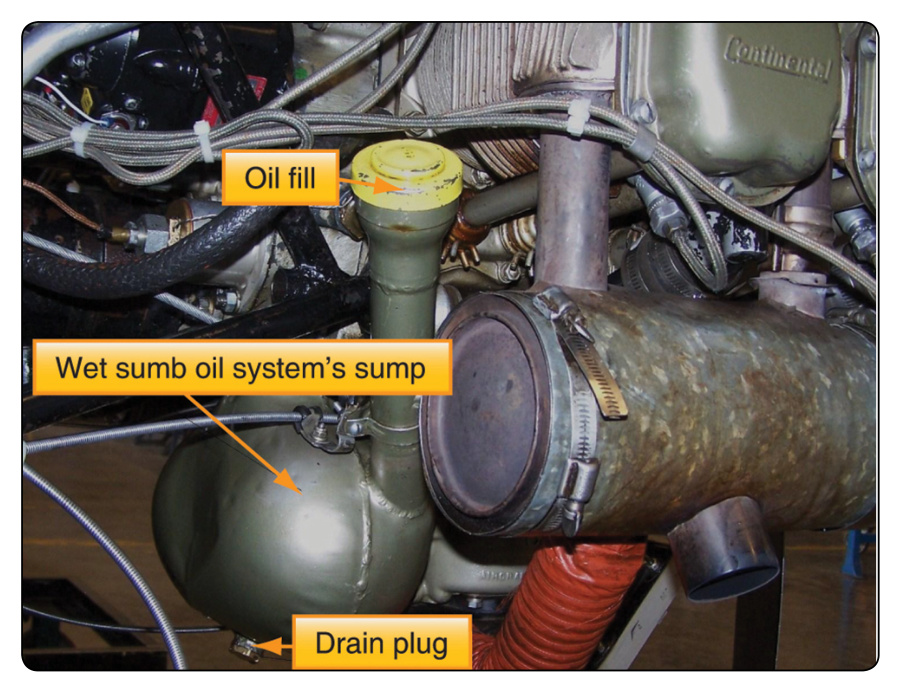
- A. 엔진 구동 오일 압력 펌프.Engine-driven oil pressure pump.
- B. 엔진 구동 진공 펌프(Engine-driven vacuum pump).Engine-driven vacuum pump.
- C. 쿠노(Cuno) 오일 필터.Cuno oil filter.
- A. 크랭크축 주 베어링.Crankshaft main bearings.
- B. 배기 밸브.Exhaust valves.
- C. 피스톤과 실린더 벽(Pistons and cylinder walls).Pistons and cylinder walls.
- A. 스플래시 또는 분무된 오일로(By splashed or sprayed oil).By splashed or sprayed oil.
- B. 오일 속에 하중 베어링부를 담가서.By submerging the load-bearing portions in oil.
- C. 오일 압력이 유지되는 배플·하우징으로 하중 베어링부를 둘러싸서.By surrounding the load-bearing portions with baffles or housings within which oil pressure can be maintained.
- A. 중력 공급 계통.gravity feed system.
- B. 스플래시·분무 계통.splash and spray system.
- C. 압력 계통(pressure system).pressure system.
- A. 커넥팅로드 중량부에 뚫린 통로로 압력 오일을 보내서.By pressure oil through a drilled passageway in the heavy web portion of the connecting rod.
- B. 마스터 로드나 커넥팅로드가 분무·튀긴 오일로(By oil which is sprayed or thrown by the master or connecting rods).By oil which is sprayed or thrown by the master or connecting rods.
- C. 오일 컨트롤 링과 링 홈에 뚫린 일련의 구멍으로 핀과 피스톤 핀 보스에 오일을 보내서.By the action of the oil control ring and the series of holes drilled in the ring groove directing oil to the pin and piston pin boss.
오일펌프(Oil Pump)는 보통 기어식(Gear-type) 정용량 펌프로 오일을 순환시킨다.The oil pump is usually a gear-type, positive-displacement pump that circulates the oil.
압력릴리프밸브(Pressure relief valve)가 계통압력을 일정하게 유지한다.A pressure relief valve keeps the system pressure constant.
스캐빈지 펌프(Scavenge pump)는 건식섬프에서 오일을 탱크로 회수한다 — 공급펌프보다 용량이 크다.The scavenge pump returns oil to the tank in a dry-sump system — it has a greater capacity than the pressure pump.
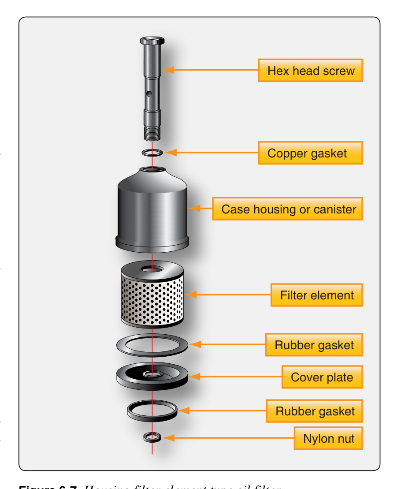
- A. 벤트.vent.
- B. 바이패스 밸브.bypass valve.
- C. 릴리프 밸브(relief valve).relief valve.
오일필터(Oil Filter)는 금속칩·오염물을 걸러 베어링 마모를 막는다.The oil filter screens out metal chips and contaminants to prevent bearing wear.
형식: 풀플로(Full-flow, 전량 여과), 바이패스(Bypass, 일부 여과).Types: full-flow (filters all the oil) and bypass (filters part of the oil).
필터 점검 시 금속입자 발견은 내부 마모의 조기 경고 — 분광분석(SOAP)으로 정밀 진단.Finding metal particles at filter inspection is an early warning of internal wear — confirmed by spectrometric oil analysis (SOAP).
![oil_filter]()
정기 오일교환은 산화·오염된 오일을 제거한다 — 제작사 권고 주기 준수.Regular oil changes remove oxidized and contaminated oil — follow the manufacturer's recommended interval.
오일분석(Oil Analysis): 마모금속 농도로 엔진 상태를 추적한다.Oil analysis tracks engine condition by the concentration of wear metals.
오일소비량 급증·압력 이상은 내부 문제의 신호.A sudden rise in oil consumption or abnormal pressure is a sign of an internal problem.
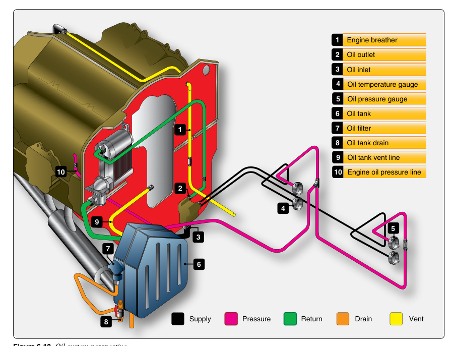
- A. 엔진 마모로 인한 금속 퇴적물.metallic deposits as a result of engine wear.
- B. 대기 먼지와 오염.atmospheric dust and pollution.
- C. 연소실 블로바이와 실린더 벽 오일 이동으로 인한 연소 퇴적물(combustion deposits).combustion deposits due to combustion chamber blow-by and oil migration on the cylinder walls.
터빈오일은 합성유(Synthetic oil)가 표준 — 고온 안정성·산화저항이 뛰어나다.Synthetic oil is the standard for turbines — it has excellent high-temperature stability and oxidation resistance.
왕복엔진 오일과 혼용 금지(Incompatibility).It must not be mixed with reciprocating-engine oil (incompatibility).
⚠️ 일부 합성유는 피부 접촉·흡입 시 유해 — 취급 주의.Warning: some synthetic oils are harmful on skin contact or inhalation — handle with care.
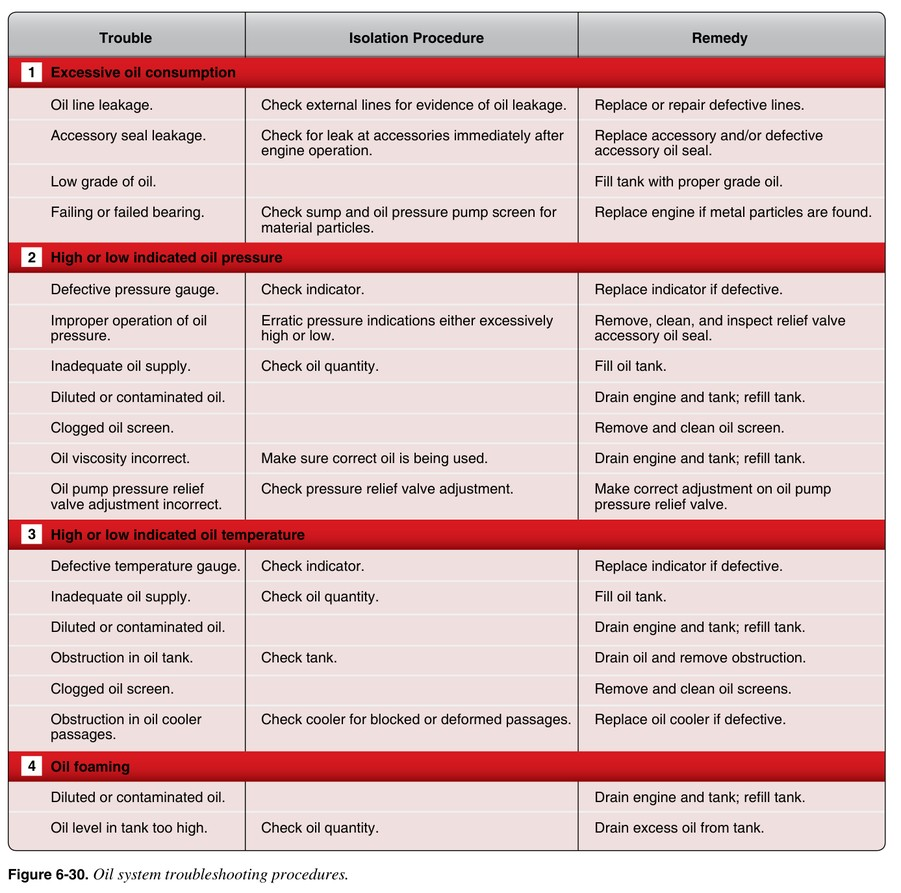
대부분 건식섬프(Dry-sump) 방식 — 별도 오일탱크 사용.Most use the dry-sump type — with a separate oil tank.
베어링·기어박스·액세서리를 윤활하고 냉각한다.It lubricates and cools the bearings, gearbox, and accessories.
오일흐름: 탱크 → 공급펌프 → 필터 → 베어링 → 스캐빈지 펌프 → 냉각기 → 탱크.Oil flow: tank → pressure pump → filter → bearings → scavenge pump → cooler → tank.
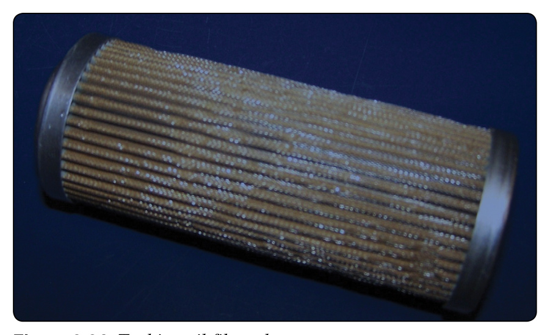
- A. 로터 커플링.Rotor coupling.
- B. 압축기 베어링.Compressor bearing.
- C. 터빈 베어링(Turbine bearing).Turbine bearing.
- A. 모든 엔진 속도에서 주 베어링에 비교적 일정한 오일 흐름을 제공하기 위해.To provide a relatively constant oil flow to the main bearings at all engine speeds.
- B. 오일 펌프에 배압을 유지해 에어록을 방지하기 위해.To keep back pressure on the oil pump, thus preventing an air lock.
- C. 과도한 압력이 베어링 공동에 들어가지 않게 해 오일 씰을 보호하기 위해.To protect the oil seals by preventing excessive pressure from entering the bearing cavities.
주요 부품: 오일탱크(Tank), 공급/스캐빈지 펌프, 필터, 오일냉각기(연료/오일 또는 공기/오일).Main parts: oil tank, pressure/scavenge pumps, filter, and oil cooler (fuel-oil or air-oil).
칩 디텍터(Chip detector): 베어링 마모 금속칩을 자석으로 감지·경고.Chip detector: a magnet detects and warns of metal chips from bearing wear.
오일압력·온도 센서가 계통 상태를 감시한다.Oil pressure and temperature sensors monitor the system.
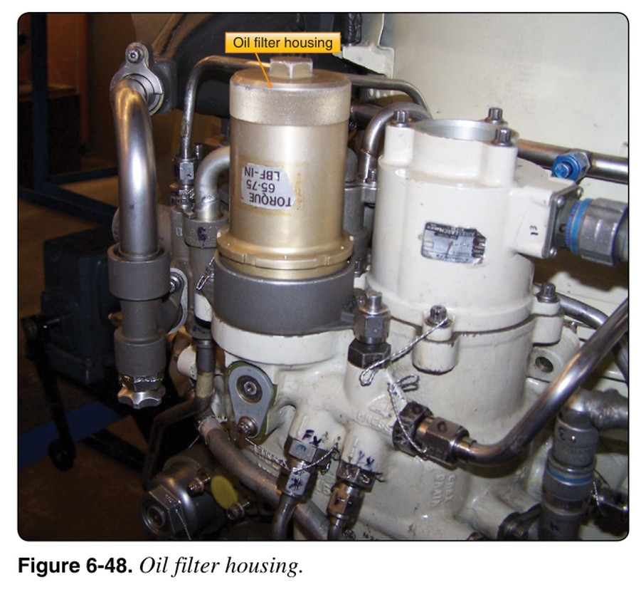
건식섬프(Dry-sump): 오일을 별도 탱크에 저장 — 대형·고성능 엔진, 곡예비행기에 유리.Dry-sump: oil is stored in a separate tank — favorable for large, high-performance engines and aerobatic aircraft.
습식섬프(Wet-sump): 크랭크케이스 하부에 오일 저장 — 구조 단순, 소형 엔진.Wet-sump: oil is stored in the bottom of the crankcase — simple, for small engines.
정압식(Pressure regulated)·가변압식(Variable pressure) 등 압력제어 방식이 다양하다.Pressure-control methods vary, including pressure-regulated and variable-pressure types.
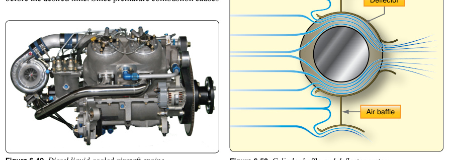
- A. 14 CFR Part 45에 따라 'oil'과 탱크 용량.'oil' and tank capacity, in accordance with 14 CFR Part 45.
- B. 14 CFR Part 33에 따라 'oil', 종류, 등급.'oil,' type, and grade, in accordance with 14 CFR Part 33.
- C. 14 CFR Part 25에 따라 'oil'.'oil,' in accordance with 14 CFR Part 25.
대부분 공랭식(Air-cooled) — 실린더 냉각핀(Cooling fin)으로 열을 발산.Most are air-cooled — cooling fins on the cylinders dissipate heat.
구성: 카울플랩(Cowl flap, 공기량 조절), 배플(Baffle, 공기유도), 실린더헤드온도(CHT) 센서.Parts: cowl flaps (to control airflow), baffles (to direct air), and a cylinder head temperature (CHT) sensor.
일부는 액랭식(Liquid-cooled) — 냉각수 순환.Some are liquid-cooled, circulating a coolant.
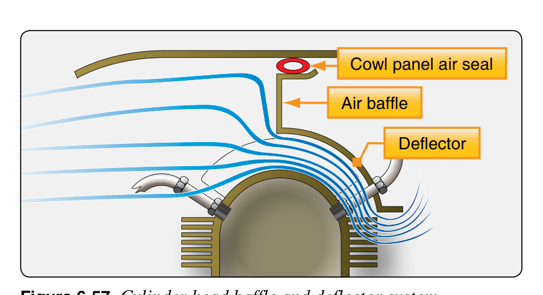
- A. 실린더 배럴.Cylinder barrel.
- B. 실린더 헤드 뒤쪽.Rear of the cylinder head.
- C. 배기 밸브 포트(Exhaust valve port).Exhaust valve port.
- A. 메인 로터의 하강풍.the downdraft from the main rotor.
- B. 엔진에 장착된 팬(fan mounted on the engine).a fan mounted on the engine.
- C. 엔진 마운트 양측의 블라스트 튜브.blast tubes on either side of the engine mount.
- A. 유용한 출력으로 전환.converted into useful power.
- B. 배기가스로 배출(carried out with the exhaust gases).carried out with the exhaust gases.
- C. 실린더 벽·헤드로 방산.dissipated through the cylinder walls and heads.
- A. 오일 희석 계통을 켠 저RPM.low RPM with oil dilution system activated.
- B. 아이들 RPM(idle RPM).idle RPM.
- C. 혼합 조절을 RICH로 한 고RPM.high RPM with mixture control in RICH position.
- A. 저항 벌브 감지 장치.resistance bulb sensing device.
- B. 휘트스톤 브리지 감지 장치.wheatstone bridge sensing device.
- C. 열전대 감지 장치(thermocouple sensing device).thermocouple sensing device.
- A. 고출력 설정에서 매우 희박한 혼합기(very lean mixture at high power settings).a very lean mixture at high power settings.
- B. 파울된 스파크 플러그.fouled spark plugs.
- C. 고출력 설정에서 매우 농후한 혼합기.a very rich mixture at high power settings.
- A. 과도한 실린더 헤드 온도.excessive cylinder head temperatures.
- B. 증가된 오일 소비.increased oil consumption.
- C. 스파크 플러그의 이물질 축적(foreign material buildup on spark plugs).foreign material buildup on spark plugs.
- A. 배럴 바깥에 직접 핀을 가공(machining fins directly on the outside of the barrel).machining fins directly on the outside of the barrel.
- B. 강철 실린더 슬리브 둘레의 알루미늄 냉각핀 재킷을 수축 끼움.shrinking on a jacket or muff of aluminum cooling fins around a steel cylinder sleeve.
- C. 배럴 바깥에 직접 핀을 가공하고 강철 실린더 슬리브에 알루미늄 냉각핀 재킷을 수축 끼움(서로 다른 부위).machining fins directly on the outside of the barrel and shrinking on a jacket or muff of aluminum cooling fins around a steel cylinder sleeve (on different areas of the barrel).
- A. 너무 낮은 실린더 헤드 온도.Cylinder head temperature too low.
- B. 부분 스로틀 작동(Part-throttle operation).Part-throttle operation.
- C. 큰 직경의 짧은 흡기 파이프.Short intake pipes of large diameter.
- A. 슬러지 챔버·침전 트랩 제공.provide sludge chambers and sediment traps.
- B. 엔진 오일로 더 많은 열 전달(provide for greater heat transfer to the engine oil).provide for greater heat transfer to the engine oil.
- C. 링 그루브·피스톤 핀 지지.support ring grooves and piston pins.
- A. 그대로 유지.remain the same.
- B. 감소(decrease).decrease.
- C. 증가.increase.
- A. 배터리 구획이나 스타터 근처.close to the battery compartment or starter.
- B. 흡기계통이나 배기계통(induction system or the exhaust system).in the induction system or the exhaust system.
- C. 지상 전원 리셉터클(연결된 경우).at the ground power receptacle (if connected to a ground power unit).
- A. 과도한 엔진 진동excessive engine vibration.
- B. 시동 곤란starting difficulties.
- C. 스파크플러그 상태spark plug condition.
냉각계통의 발전
Evolution of Cooling Systems왕복엔진은 비효율적인 기계로, 연료 에너지의 약 1/3만 유용한 일로 변환된다. 전체 에너지의 절반은 배기로, 약 12%는 냉각계통으로 손실된다. 냉각계통은 이 원치 않는 열을 제거하기 위해서만 설계된다. 냉각 방식은 공랭(air cooling)과 액랭(liquid cooling) 두 가지다.A reciprocating engine is inefficient — only about one-third of the fuel energy becomes useful work. Half the total energy is lost out the exhaust and about 12% through the cooling system. The cooling system exists solely to remove unwanted heat. The two types are air cooling and liquid cooling.
초기 액랭 엔진은 실린더 둘레의 얇은 워터재킷으로 물을 순환시켜 라디에이터로 열을 보냈다. 1차 대전기 엔진에 1920년대까지 쓰였으나, 큰 라디에이터와 배관이 누설과 항력을 일으켜 골칫거리였다. 고속기를 위해 날개 표면에 얇은 황동판을 댄 스킨 라디에이터(skin radiator)와, 물을 끓여 증기 응축열을 이용하는 증기 냉각(steam cooling)도 시도되었다.Early liquid-cooled engines circulated water through thin jackets around the cylinders to a radiator. Used into the 1920s, the large radiators and plumbing caused leaks and drag. For high-speed aircraft, engineers tried skin radiators (thin brass sheets over the wing) and steam (evaporative) cooling that used the heat released when steam condenses.
공랭은 라디에이터와 복잡한 배관이 없는 장점이 있었지만, 저속에서는 엔진 위로 흐르는 공기가 부족했다. 이 때문에 실린더가 크랭크축 둘레를 약 1,200 RPM으로 함께 도는 로터리 성형엔진이 개발되었고, 1927년 Wright J-5 Whirlwind 공랭 엔진이 대서양·태평양 횡단을 가능케 하며 항공의 신뢰성을 입증했다.Air cooling avoided radiators and plumbing but lacked airflow at low speed. This drove the rotary radial engine, whose cylinders spin around the crankshaft at ~1,200 RPM for airflow. In 1927 the air-cooled Wright J-5 Whirlwind made trans-Atlantic and trans-Pacific flights possible, proving aviation's reliability.
카울링과 배플
Cowling & Baffles현대 일반항공 엔진의 대부분은 공랭식이다. 효율적인 냉각에는 핀(fin)뿐 아니라 카울링(cowling)과 배플(baffle)도 중요하다. 열의 대부분은 실린더 헤드에 있으며, 공랭으로 제거 가능한 열량은 노출 표면적에 좌우된다. 핀은 주조·기계가공 기술 발전으로 더 얇고 깊어져 표면적이 크게 늘었다.Most modern GA engines are air-cooled. Efficient cooling depends not only on fins but also on cowling and baffles. Most heat is in the cylinder head, and the heat removable by air cooling depends on exposed surface area. Improved casting and machining made fins thinner and deeper, greatly increasing surface area.
1929년 등장한 타운엔드 링(Townend ring, 미국에서는 speed ring)은 성형엔진 둘레의 에어포일 단면 링으로, 냉각 항력을 상쇄할 추력을 내고 핀을 지나는 공기 흐름을 균일하게 해 항력을 약 11% 줄였다. NACA 카울은 더 완전히 감싸 항력을 더 줄였다. 배플(baffle)은 얇은 판금 슈라우드로, 냉각 공기를 실린더 핀 사이와 둘레로 유도해 균일 냉각을 돕는다.The 1929 Townend ring (speed ring in the US) is an airfoil-section ring around a radial engine that produces thrust to offset cooling drag and evens airflow through the fins, cutting drag ~11%. The NACA cowl enclosed the engine more fully for even less drag. Baffles are thin sheet-metal shrouds that direct cooling air between and around the cylinder fins for even cooling.
![s-cowling-baffle]()
액랭식 엔진
Liquid-Cooled Engines물 냉각의 두 단점(큰 라디에이터, 엔진 온도 제한)은 에틸렌글리콜(ethylene glycol) 또는 글리콜-물 혼합액을 냉각제로 쓰고 계통을 가압해 극복했다. 2차 대전 때 미국은 대부분 공랭 성형엔진을 선호했지만, P-38 라이트닝과 P-51 머스탱은 액랭 V-12 엔진을 썼다. 영국·독일도 가압 글리콜-물 V형 엔진을 널리 사용했고, 서모스탯 밸브로 온도를 조절했다.Water cooling's two drawbacks (large radiator, limited engine temperature) were overcome with ethylene glycol or a glycol-water coolant and a pressurized system. In WWII the US mostly favored air-cooled radials, but the P-38 Lightning and P-51 Mustang used liquid-cooled V-12s. Britain and Germany widely used pressurized glycol-water V-engines, with a thermostatic valve controlling temperature.
현대 일반항공은 대부분 공랭이지만 Teledyne-Continental Voyager 시리즈가 액랭에 대한 관심을 되살렸다. 60% 글리콜·40% 물이 실린더 헤드 통로를 고속으로 흐르고, 실린더 벽과 피스톤은 대량의 오일 분무로 냉각한다. 액랭의 장점은: ① 균일 냉각으로 실린더 간 온도차 감소(지상 장시간 공회전 시에도 과열 없음), ② 작은 라디에이터로 냉각 항력 감소, ③ 농후혼합 불필요로 연료 소모 감소다.Modern GA is mostly air-cooled, but the Teledyne-Continental Voyager series revived liquid cooling. A 60% glycol/40% water mix flows fast through cylinder-head passages, and the cylinder walls and pistons are cooled by a high-volume oil spray. Advantages: (1) even cooling reduces cylinder-to-cylinder temperature differences (no overheating even during long ground idle), (2) a small radiator reduces cooling drag, (3) no rich mixture needed, lowering fuel consumption.
- A. 연료를 냉각한다.Cool the fuel.
- B. 오일을 냉각한다(Cool the oil).Cool the oil.
- C. 오일을 탈기(de-aerate)한다.De-aerate the oil.
터빈은 연속 고온이라 정교한 냉각이 필수 — 공기냉각(Air cooling)이 핵심.Turbines run continuously hot, so precise cooling is essential — air cooling is key.
터빈블레이드 내부에 냉각통로(Cooling passage)를 두고 압축공기를 흘려 막냉각(Film cooling).Cooling passages inside the turbine blades pass compressor air for film cooling.
연소실·케이스도 2차 공기로 냉각한다.The combustor and case are also cooled with secondary air.
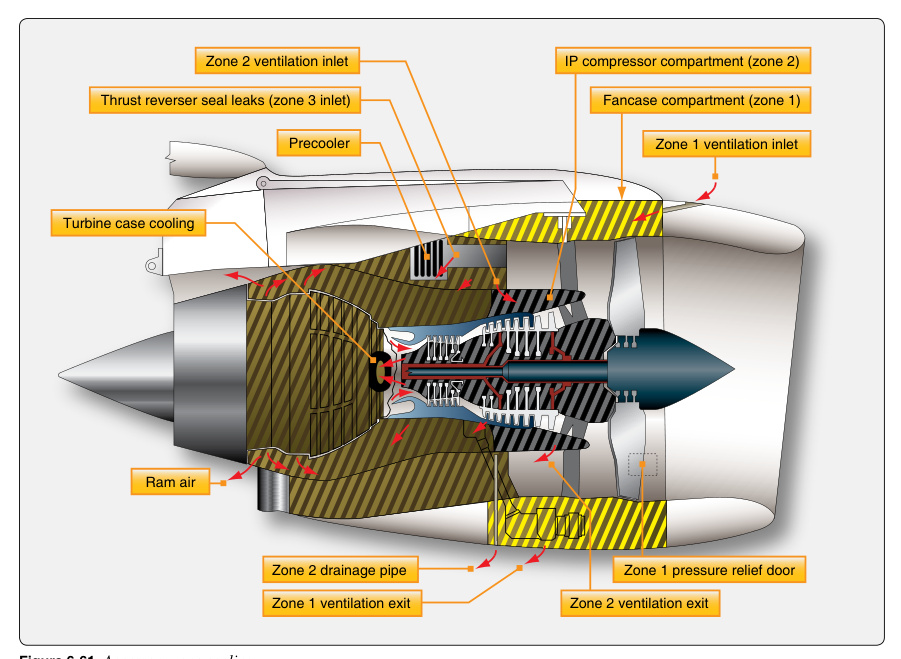
- A. 열팽창을 제어해 최적의 터빈 블레이드 팁 간극을 제공하기 위해.provide optimum turbine blade tip clearance by controlling thermal expansion.
- B. 흐르는 가스에서 100%까지 운동에너지를 추출하기 위해.provide up to 100 percent kinetic energy extraction from the flowing gases.
- C. 터빈 블레이드·베인 합금의 온도 한계보다 600~800°F 높은 열환경에서 작동을 허용하기 위해.allow operation in a thermal environment 600 to 800°F above the temperature limits of turbine blade and vane alloys.
카울링 상세 (Townend·NACA·압력냉각)
Cowling Detail📗 ASA Powerplant 보강초기 공랭식 실린더는 카울링 없이 노출되었으나, 속도가 약 120mph를 넘자 항력이 과도해졌습니다. 이에 방사형(radial) 엔진용 카울링이 개발되었습니다.Early air-cooled cylinders were uncowled, but past ~120 mph drag became excessive, driving radial-engine cowling development.
타운엔드 링(Townend ring, 스피드 링) — 1929년 도입. 실린더 바깥을 두르는 좁은 시위(narrow-chord) 링으로, 에어포일 단면이라 전방 공력을 생성하고 핀 통과 공기를 균일화합니다. 적절히 설계·장착 시 항력을 약 11% 감소시킵니다.The Townend (speed) ring (1929) is a narrow-chord airfoil-section ring that produces forward force and evens airflow; it cuts drag by about 11%.
NACA 카울링 — 긴 시위(long-chord) 에어포일 형상으로 실린더 뒤까지 연장되어 동체·나셀에 페어링됩니다. 좁은 간격으로 냉각공기가 균일하게 배출되며, 그 공력 형상이 냉각 항력을 상쇄할 만큼 전방 추력을 냅니다. 전투기·폭격기·수송기의 방사형 엔진 표준이 되었습니다.The NACA cowling is a long-chord airfoil that fairs into the fuselage/nacelle; its shape produces enough forward thrust to overcome cooling drag. It became the radial-engine standard.
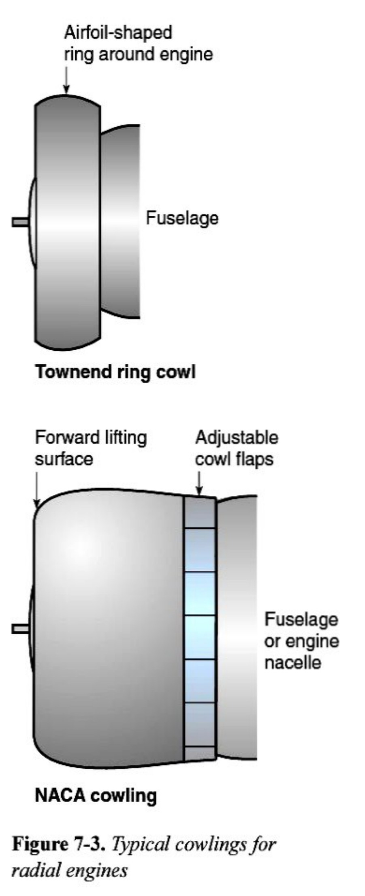
압력 냉각(pressure cooling) — 현대 수평대향(horizontally opposed) 엔진 방식. 카울링을 상·하 격실로 나누고, 상부는 램공기로 고압, 하부는 배기구·카울플랩으로 저압을 만들어, 압력차로 냉각공기를 실린더 핀 사이로 강제 통과시킵니다. 실린더 간 배플(intercylinder baffle)과 슈라우드가 모든 공기를 핀으로 흐르게 합니다.Pressure cooling (modern opposed engines) splits the cowling into high-pressure (upper, ram air) and low-pressure (lower, via cowl flaps) compartments; the differential forces cooling air through the fins.
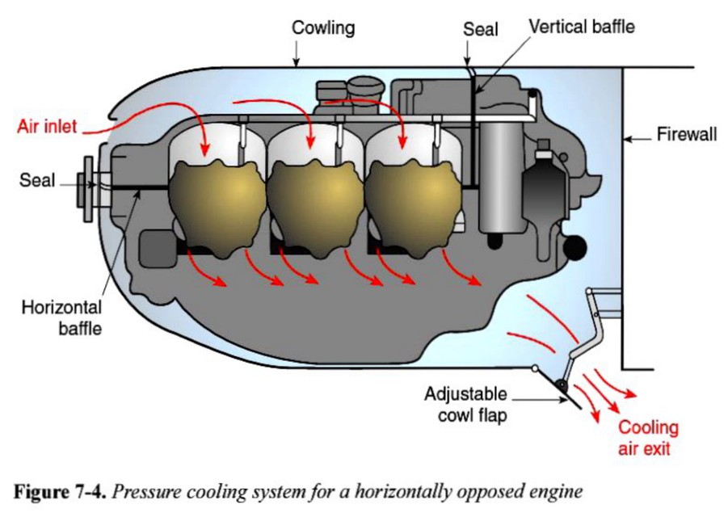
📄 원문: ASA AMT Powerplant, Ch.7 Cooling Systems, p.262–264Source: ASA AMT Powerplant, pp.262–264
증강관과 냉각계통 정비
Augmentor Tubes & Cooling Maintenance📗 ASA Powerplant 보강증강관(augmentor tube) — 냉각공기 흐름을 늘리는 장치. 엔진 양쪽 실린더용 배기관 끝에 스테인리스 증강관을 두어, 배기가스의 고속을 벤투리(venturi) 작용으로 카울링 하부에 저압을 만듭니다. 이 저압이 핀 통과 공기량을 늘려 냉각을 개선합니다.Augmentor tubes surround each exhaust tailpipe; the high-velocity exhaust acts as a venturi to lower pressure below the engine, increasing cooling airflow through the fins.
냉각계통 점검 — 카울링을 벗기고 실린더의 탄 페인트(burned paint)를 확인합니다(국부 열점·데토네이션 징후). 후방 수직배플·수평배플의 결손·균열, 실링 스트립이 위/앞으로 접혔는지 확인합니다. 카울플랩은 전 범위를 부드럽게 작동해야 하며 힌지 마모가 없어야 합니다.Inspection: remove cowling, check cylinders for burned paint (hot spots/detonation), verify baffles and sealing strips fold up/forward, and confirm cowl flaps move freely through full travel.
핀 정비 — 실린더 핀의 작은 균열은 헤드까지 확장되지 않았다면 끝을 스톱드릴(stop-drill)하고, 거친 모서리는 고운 줄로 다듬습니다(profiling). 핀 면적 제거 전 반드시 엔진 서비스 매뉴얼에서 허용 최대량을 확인합니다. 주철 알루미늄 핀이 휜 경우 펴지 말 것 — 취성으로 부러질 위험이 큽니다.Fin maintenance: stop-drill small cracks (if not into the head), file rough edges (profiling), and check the manual for max removable area. Do NOT straighten bent cast-aluminum fins—they are brittle.
📄 원문: ASA AMT Powerplant, Ch.7 Cooling Systems, p.264–266Source: ASA AMT Powerplant, pp.264–266
- A. 풀 리치(FULL RICH).FULL RICH.
- B. 린.LEAN.
- C. 풀 린.FULL LEAN.
윤활유 기능과 계통 📙 Jeppesen 참고
Lubrication Functions & System윤활유는 마찰·마모를 줄이는 유막을 만들 뿐 아니라 냉각(연소열의 25~30% 흡수)·밀봉(피스톤링과 실린더벽)·세척(오염물 운반)·방청·완충(충격 흡수) 기능을 합니다. 저장 방식은 건식 섬프(dry sump, 별도 오일탱크, 터빈·대형 왕복엔진)와 습식 섬프(wet sump, 크랭크케이스 저장, 소형기)로 나뉩니다.Oil not only forms a friction- and wear-reducing film but also cools (absorbing 25–30% of combustion heat), seals (piston rings to cylinder walls), cleans (carrying contaminants), prevents corrosion, and cushions shock. Storage is dry-sump (separate oil tank, turbines and large recip engines) or wet-sump (stored in the crankcase, small aircraft).
계통은 오일펌프(주로 기어식)가 가압하고 릴리프밸브가 압력을 규정치로 유지하며, 필터가 오염물을 거릅니다 — 풀플로(full-flow)는 전량을 여과하고 막히면 바이패스로 무여과 오일을 공급합니다. 오일 등급은 광유(mineral, 신품 길들이기)와 애시리스 분산형(ashless dispersant, 운용)으로 나뉘고, 점도(SAE 번호)는 온도·엔진에 맞춰 선정합니다. 필터·스크린의 금속입자는 내부 마모의 신호로, 자석·분광분석(SOAP)으로 종류를 판별합니다.The oil pump (usually gear-type) pressurizes, a relief valve holds pressure to spec, and a filter removes contaminants — a full-flow filter passes all oil and, if clogged, bypasses unfiltered oil. Oil grades are mineral (break-in) and ashless dispersant (operation), with viscosity (SAE number) chosen for temperature and engine. Metal particles in filters/screens signal internal wear, identified by magnet and spectrometric analysis (SOAP).
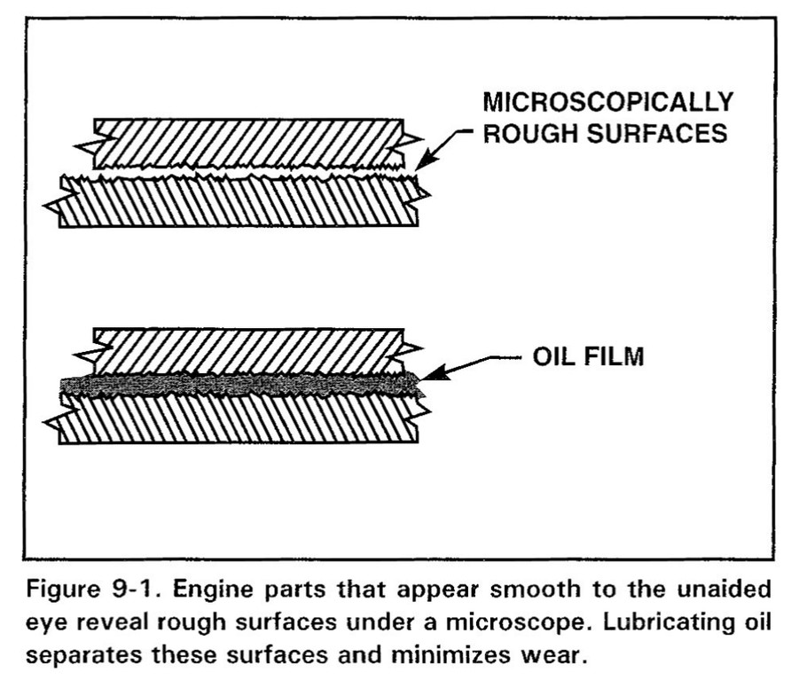
- A. 'oil'과 제작사가 지정한 오일 종류·등급.'oil' and the type and grade of oil specified by the manufacturer.
- B. 'oil'과 탱크 용량.'oil' and tank capacity.
- C. 'oil'(만).'oil.'
윤활유의 종류와 특성: 광유·AD유·다점도·합성·극압유 심화 📙 Jeppesen 정독
Types and Characteristics of Aircraft Oils항공기에는 다양한 출처의 오일이 쓰여 왔습니다. 초기 엔진은 피마자콩에서 추출한 순수 식물유인 캐스터유(castor oil)를 윤활유로 썼으나, 식물성 윤활유는 화학적 안정성이 나쁘고 왕복엔진에서 산화하는 경향이 있어 곧 광유(mineral-based oil)로 대체됐습니다. 광유는 식물성보다 화학적으로 안정적이어서 여전히 왕복엔진에 널리 쓰입니다. 합성유(synthetic oil)도 왕복·터빈 엔진에 쓰이며, 광유와 합성유의 혼합을 세미합성(semi-synthetic)이라 합니다. 같은 오일이 SAE 등급, 상용 항공 등급, 군용 등급을 함께 가질 수 있는데, 예를 들어 SAE 30 = 항공 65 = AN 1065, SAE 50 = 항공 100 = AN 1100으로 대응됩니다.Oils from many sources have been used in aircraft. Early engines used castor oil, a pure vegetable oil from castor beans, but vegetable lubricants have poor chemical stability and oxidize in reciprocating engines, so they were soon replaced by mineral-based oils, which are more stable and still widely used. Synthetic oils are used in reciprocating and turbine engines, and a mineral-synthetic blend is semi-synthetic. The same oil can carry SAE, commercial aviation, and military ratings—e.g., SAE 30 = Aviation 65 = AN 1065, SAE 50 = Aviation 100 = AN 1100.
여러 해 동안 첨가제가 없는 스트레이트 광유인 MIL-L-6082E가 항공기 엔진의 주된 오일이었습니다. 스트레이트 광유는 효과적 윤활유지만 한계가 있는데, 고온·통기 조건에 노출되면 산화하는 경향이 있고 과도하게 오염되면 슬러지가 형성돼 필터·통로를 막고 엔진 부품을 긁을 수 있습니다. 이 때문에 스트레이트 광유는 일반적으로 신품이나 새로 오버홀한 엔진의 브레이크인(break-in) 기간에만 씁니다. 왕복엔진에 가장 흔히 쓰이는 오일은 MIL-L-22851D를 따르는 애시리스 디스퍼선트(AD, ashless-dispersant) 오일입니다. AD유는 스트레이트 광유의 탄소 형성 제약이 없고 디터전트유처럼 애시(ash) 침전물을 만들지도 않습니다. 이 오일은 슬러지 형성 물질이 서로 반발해 오일 필터에 걸릴 때까지 부유 상태를 유지하게 하는 디스퍼선트를 함유해, 오일 통로와 링 그루브를 유해 침전물 없이 유지합니다.For years MIL-L-6082E, a straight mineral oil with no additives, was the principal aircraft oil. It's effective but limited: it tends to oxidize when hot and aerated, and if overly contaminated forms sludge that clogs filters and passages and scores parts, so its use is generally limited to new or newly overhauled engines during break-in. The most common reciprocating-engine oil is ashless-dispersant (AD) oil per MIL-L-22851D, which lacks straight mineral oil's carbon-forming restrictions and forms no ash deposits like detergent oils; its dispersant makes sludge-forming materials repel each other and stay suspended until trapped by the filter, keeping passages and ring grooves clear.
디스퍼선트 외에 일부 AD유는 엔진에 금속성 애시 침전물을 남기지 않는 안티웨어·안티폼 첨가제를 함유합니다. 애시 침전물은 조기 점화(preignition)와 스파크 플러그 파울링을 유발할 수 있어 바람직하지 않습니다. AD유는 매우 효과적 윤활유여서, 제조사들은 부품 마모가 어느 정도 필요한 브레이크인 기간에는 AD유 사용을 권장하지 않습니다. 피스톤 링이 실린더 벽을 효과적으로 밀봉하려면 두 표면이 서로 마모돼 밀봉 가능한 접합을 만들어야 하며, 충분한 마모가 없으면 엔진이 수명 내내 과도한 오일을 소비합니다. 따라서 마모를 촉진하기 위해 대부분의 제조사는 신품·오버홀 엔진을 처음 10~50시간 또는 오일 소비가 안정될 때까지 스트레이트 광유로 운전한 뒤, 이를 배출하고 양질의 AD유로 교체해 남은 수명 동안 쓰도록 권장합니다.Besides a dispersant, some AD oils have anti-wear, anti-foam additives leaving no metallic ash, which is undesirable because ash can cause preignition and spark-plug fouling. Because AD oil lubricates so well, makers don't recommend it during break-in, when some wear is needed: piston rings must wear against the cylinder wall to make a sealable junction, and without enough wear the engine consumes excess oil for life. So most makers run new and overhauled engines on straight mineral oil for the first 10 to 50 hours or until oil consumption stabilizes, then drain it and switch to quality AD oil for the rest of the engine's life.
다점도유(multiviscosity oil)는 단점도유의 단점을 보완하려 개발됐습니다. 예를 들어 더운 기후에서 SAE 10 오일은 너무 뜨거워져 가동부에 적절한 유막을 유지하는 능력을 잃고, 추운 기후에서 SAE 30 오일은 특히 엔진 시동 직후 제대로 순환하지 못합니다. 단점도유와 달리 다점도유는 더 넓은 온도 범위에서 적절한 윤활을 제공해, 추운 날씨에 더 빨리 흐르고 더운 날씨에 묽어지지 않습니다. 전형적 다점도유인 SAE 15W50은 일반적으로 SAE 15와 SAE 50 오일의 결합 온도 범위에서 쓸 수 있습니다.Multiviscosity oils address single-viscosity drawbacks: in warm climates an SAE 10 gets too hot and loses its film on moving parts, while in cold climates an SAE 30 won't circulate properly, especially at start-up. Unlike single-viscosity oils, multiviscosity oils lubricate over a wider temperature range—flowing faster when cold and not thinning when hot; a typical SAE 15W50 generally works over the combined range of SAE 15 and SAE 50.
합성유는 화학적 조성 덕에 자동차 등급 SAE-5~SAE-20과 유사한 다점도 특성을 가집니다. 광물·식물·동물유의 합성 추출물인 특정 디에스터(diester)와 화학 첨가제 혼합물을 함유합니다. 즉 합성유는 원유에서 베이스 스톡을 정제하는 대신 원료를 합성해 베이스 스톡으로 만듭니다. 화학적 구성 때문에 합성유는 내부 마찰이 극히 낮고 열 분해·산화에 대한 저항이 높아 터빈 엔진에 이상적이며 오일 교환 주기를 더 길게 가질 수 있습니다. 마모 특성은 AD유와 비슷하고 스트레이트 광유보다 우수합니다. 다만 합성유는 AD유만큼 오염물을 분산·부유시키지 못해 왕복엔진, 특히 드물게 작동하는 엔진에서 슬러지 축적을 유발하는 경향이 있습니다.Synthetic oils have multiviscosity properties like automotive SAE-5 to SAE-20, containing chemical additives and certain diesters synthesized from mineral, vegetable, and animal oils—made by synthesizing raw materials into a base stock rather than refining crude. Their chemistry gives extremely low internal friction and high resistance to thermal breakdown and oxidation, making them ideal for turbines with longer change intervals; wear characteristics resemble AD oil and beat straight mineral oil. However, they don't disperse and suspend contaminants as well as AD oils, tending to build sludge in reciprocating engines, especially infrequently operated ones.
합성유의 또 다른 문제는 일부 경우 엔진 내 고무 제품과 수지를 연화시킬 수 있다는 점입니다. 이 때문에 한 제조사는 합성유 사용 시 실린더 간 드레인 라인의 더 잦은 교체를 요구하고, 플리티드 페이퍼 오일 필터는 오일이 수지를 녹여 필터가 붕괴하지 않는지 더 면밀히 검사해야 합니다. 일반적으로 합성유는 광유와 호환되지 않아 혼합할 수 없고, 대부분의 제조사는 다른 브랜드·종류의 합성유 혼합도 반대합니다. 합성유는 SAE 등급 대신 센티스톡(cSt) 단위의 동점도 등급을 받는데, 5센티스톡 오일은 SAE 5W10, 7센티스톡 오일은 SAE 5W20 다점도 광유와 대략 같은 점도입니다. 합성유는 페인트를 물집 지게 하거나 벗기는 경향이 있어 유출 시 석유 용제로 즉시 닦고, 피부에 쉽게 흡수되는 독성 첨가제를 함유하므로 정비 시 과도·장시간 피부 노출을 피합니다. 극압(EP, extreme pressure) 윤활유(하이포이드 윤활유)는 고하중 보호를 위해 특별히 배합되며, 금속 표면에 결합해 고압·고마찰 속도에서 마찰을 줄이는 첨가제(느슨하게 결합된 황·염소 분자)를 함유합니다. 프로펠러 감속 케이스의 스퍼 기어는 높은 치압에서 작동해 기어 고장 방지를 위해 EP 윤활유를 자주 요구합니다.Synthetic oil can also soften rubber and resins in the engine, so one maker requires more frequent inter-cylinder drain-line replacement and closer inspection of pleated-paper filters lest dissolved resins collapse them. Generally synthetics aren't compatible with mineral oils and can't be mixed, and most makers advise against mixing different synthetic brands or types. Instead of an SAE rating, synthetics get a kinematic viscosity in centistokes (cSt): 5 cSt ≈ SAE 5W10, 7 cSt ≈ SAE 5W20 multiviscosity mineral oil. Synthetics tend to blister or remove paint (wipe spills immediately with petroleum solvent) and contain toxic additives readily absorbed through skin, so avoid excessive exposure. Extreme-pressure (EP) or hypoid lubricants are formulated for high loads, with additives (loosely held sulfur or chlorine) that bond to metal to reduce friction under high pressure or rubbing velocity; propeller-reduction spur gears operate under high tooth pressure and often require EP lubricants to prevent gear failure.
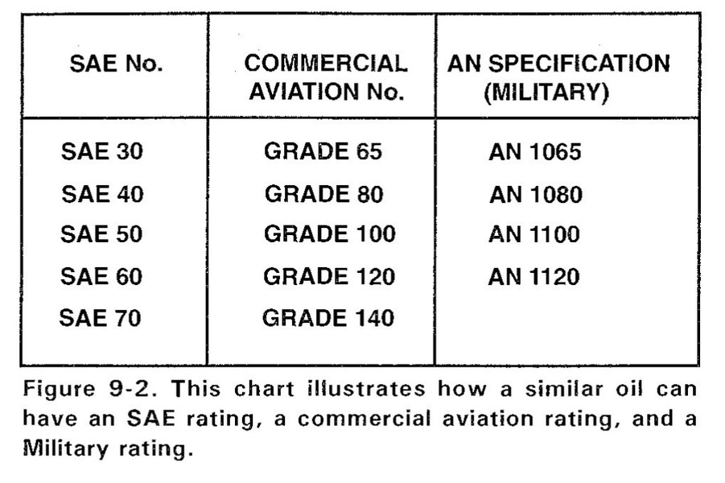
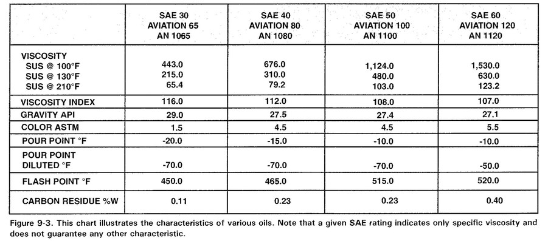
- A. 표준 온도에서 고급 파라핀계 오일과 비교한 유동 저항.Its resistance to flow at a standard temperature as compared to high grade paraffin-base oil at the same temperature.
- B. 온도 변화에 따른 점도 변화율(rate of change in viscosity with temperature change).Its rate of change in viscosity with temperature change.
- C. 표준 온도에서 오리피스를 통과하는 유량.Its rate of flow through an orifice at a standard temperature.
- A. 온도 변화에 따라 점도가 크게 변하지 않는(does not vary much) 오일.in which the viscosity does not vary much with temperature change.
- B. 온도 변화에 따라 점도가 크게 변하는 오일.in which the viscosity varies considerably with temperature change.
- C. SAE 번호가 높은 오일.which have high SAE numbers.
- A. 고도에서 묽은 오일이 적절한 유막 강도를 유지하기 어려워서.the reduced ability of thin oils to maintain adequate film strength at altitude (reduced atmospheric pressure).
- B. 상대적으로 높은 회전 속도 때문에.the relatively high rotational speeds.
- C. 큰 간극과 높은 운전 온도(large clearances and high operating temperatures) 때문에.large clearances and high operating temperatures.
- A. 석유계 오일보다 저렴하다.are cheaper than petroleum oils.
- B. 고온에서 락커·코크 침전이 적고 증발 경향이 적다.have less tendency to deposit lacquer/coke and less tendency to evaporate at high temperatures.
- C. 점도지수가 낮다.have a low viscosity index.
- A. 유동 저항(resistance to flow).resistance to flow.
- B. 변화율.rate of change.
- C. 무게 또는 밀도.weight or density.
- A. 온도(Temperature).Temperature.
- B. 엔진 RPM.Engine RPM.
- C. 오일 압력.Oil pressure.
- A. 냉각 능력.Cooling ability.
- B. 화학적 안정성(Chemical stability).Chemical stability.
- C. 마찰 저항.Friction resistance.
- A. 동물성, 광물성, 또는 합성 기반.animal, mineral, or synthetic based.
- B. 광물성 또는 합성 기반(mineral or synthetic based).mineral or synthetic based.
- C. 식물성, 광물성, 또는 합성 기반.vegetable, mineral, or synthetic based.
- A. EP 윤활유(an EP lubricant).an EP lubricant.
- B. 스트레이트 광유.straight mineral oil.
- C. 금속회분 청정유.metallic ash detergent oil.
- A. 애시리스 분산유.Ashless dispersant oil.
- B. 스트레이트 광유(Straight mineral oil).Straight mineral oil.
- C. 세미합성유.Semi-synthetic oil.
- A. 금속회분 청정유.Metallic-ash detergent oil.
- B. 애시리스 분산유(Ashless dispersant oil).Ashless dispersant oil.
- C. 스트레이트 광유.Straight mineral oil.
- A. 피스톤 벽의 오일 링 홈과 피스톤 스커트 사이에 깎인 수직 슬롯으로.Down vertical slots cut in the piston wall between the piston oil ring groove and the piston skirt.
- B. 피스톤 오일 링 홈에 뚫린 구멍으로(Through holes drilled in the piston oil ring groove).Through holes drilled in the piston oil ring groove.
- C. 피스톤 핀 리세스에 뚫린 구멍으로.Through holes drilled in the piston pin recess.
- A. 용적식(positive displacement).positive displacement.
- B. 가변 용적식.variable displacement.
- C. 정속식.constant speed.
- A. 엔진 운전 첫 30초 이내.within the first 30 seconds of engine operation.
- B. 정상 오일 온도에서 높은 오일 압력을 보장하기 위해 오일이 정상보다 높은 온도일 때.when the oil is at a higher than normal temperature to assure high oil pressure at normal oil temperature.
- C. 오버홀 작업장에서(in the overhaul shop).in the overhaul shop.
- A. 2만 옳다(only 2 is true).only 2 is true.
- B. 1, 2 모두 옳다.both 1 and 2 are true.
- C. 1, 2 모두 옳지 않다.neither 1 nor 2 is true.
- A. 더 높은 수준의 연소 부산물을 운반·분산해야 한다.are required to carry and disperse a higher level of combustion byproducts.
- B. 엔진 내 탄소 형성을 다소 더 허용할 수 있다.may permit a somewhat higher level of carbon formation in the engine.
- C. 락커나 코크를 덜 생성하는 경향이 있다(less tendency to produce lacquer or coke).have less tendency to produce lacquer or coke.
- A. 제자리에 머물며 적절한 유막을 유지하는 가장 묽은(thinnest) 오일.The thinnest oil that will stay in place and maintain a reasonable film strength.
- B. 높은 점도와 낮은 유화성을 결합한 오일.An oil that combines high viscosity and low demulsibility.
- C. 낮은 점도지수와 높은 중화가를 결합한 오일.An oil that combines a low viscosity index and a high neutralization number.
- A. 낮은 인화점.Low flash point.
- B. 높은 인화점(high flash point).High flash point.
- C. 높은 휘발성.High volatility.
오일 분배 방식과 계통 분류(웻섬프·드라이섬프)·구성품 심화 📙 Jeppesen 정독
Oil Distribution, Wet/Dry-Sump Classification, and Components윤활 계통의 주 목적은 엔진 내부 부품에 오일을 전달하는 것입니다. 가장 흔한 오일 분배 방식은 압력·스플래시·스프레이 윤활입니다. 적절한 윤활을 보장하기 위해 왕복엔진은 압력과 스플래시 윤활의 조합에 의존하지만, 대형 엔진에서는 압력·스플래시·스프레이 윤활을 모두 써야만 적절한 오일 순환이 가능합니다.The lubrication system's primary purpose is delivering oil to internal engine components. The most common distribution methods are pressure, splash, and spray lubrication. Reciprocating engines rely on a combination of pressure and splash lubrication for adequate lubrication, but larger engines achieve adequate circulation only with pressure, splash, and spray lubrication together.
왕복엔진은 주로 압력 윤활(pressure lubrication)을 씁니다. 대부분 정변위(positive displacement) 엔진 구동 펌프가 가압 오일을 중요 엔진 부품에 공급합니다. 정변위란 펌프 기구의 회전·사이클마다 특정량의 유체를 이동시킨다는 뜻입니다. 오일은 오일 펌프를 지난 뒤 여러 통로를 통해 각 엔진 부품으로 분배됩니다. 가압 오일로 윤활되는 부품은 보통 모든 평 베어링, 크랭크축·캠축 메인 베어링, 커넥팅 로드 하부 베어링, 밸브 조립체입니다.Reciprocating engines primarily use pressure lubrication, where a positive-displacement engine-driven pump supplies pressurized oil to critical parts—positive displacement meaning it moves a specific amount of fluid per revolution or cycle. After the pump, oil passes through passages to various components; those lubricated by pressurized oil typically include all plain bearings, crankshaft and camshaft main bearings, lower connecting-rod bearings, and valve assemblies.
많은 왕복엔진은 압력 윤활 외에 스플래시 윤활(splash lubrication)도 씁니다. 스플래시 윤활은 내부 부품의 움직임이 크랭크케이스 주위로 오일을 튀겨 생기며, 오일이 크랭크케이스에 저장되는 엔진에서 매우 효과적입니다. 크랭크축이 회전하면 각 크랭크 스로가 오일에 부분적으로 잠겼다가 나오며 실린더 벽, 캠축 로브, 커넥팅 로드 상부 베어링, 피스톤 핀, 부속 기어 등 인근 부품에 오일을 튀깁니다. 일부 대형 왕복엔진은 스플래시 윤활이 효과적이기에 너무 커서 스프레이 윤활(spray lubrication)을 씁니다. 스프레이 윤활은 압력 윤활 계통의 가압 오일을 쓰되, 오일 통로로 부품에 보내는 대신 노즐을 통해 부품에 분사합니다. 분사 오일로 윤활되는 부품은 일부 실린더 벽과 캠축 로브입니다.Many reciprocating engines also use splash lubrication, produced by internal components splashing oil around the crankcase—very effective where oil is stored in the crankcase. As the crankshaft rotates, each crank throw is partly submerged in oil and, emerging, splashes it onto nearby components including cylinder walls, camshaft lobes, upper connecting-rod bearings, piston pins, and accessory gears. Some large engines are too big for splash lubrication to work, so spray lubrication is used: it uses the same pressurized oil but sprays it onto components through a nozzle instead of routing it through passages, lubricating some cylinder walls and camshaft lobes.
왕복엔진 윤활 계통은 일반적으로 웻섬프(wet-sump) 또는 드라이섬프(dry-sump)로 분류됩니다. 웻섬프 계통은 대부분의 자동차 엔진처럼 모든 오일을 엔진 크랭크케이스에 저장하고 펌프가 엔진 전체에 분배하며, 순환 후 오일이 섬프로 돌아가 재순환됩니다. 웻섬프의 장점은 상대적 단순함과 가벼운 무게이고, 단점은 섬프 크기가 오일 용량을 제한하고 오일이 뜨거운 엔진 안에 담겨 냉각이 더 어렵다는 점입니다.Reciprocating lubrication systems are generally classified wet-sump or dry-sump. A wet-sump system stores all oil in the crankcase, like most automobile engines, with a pump distributing it and oil returning to the sump to recirculate. Advantages are relative simplicity and light weight; disadvantages are that sump size limits oil capacity and cooling is harder because the oil sits in the hot engine.
드라이섬프 계통은 오일을 엔진과 별도의 오일 저장조에 저장해 보통 더 많은 오일을 실을 수 있습니다. 드라이섬프는 주로 대형 성형엔진에 쓰였으나 일부 수평대향 엔진에도 쓰였습니다. 드라이섬프에서는 오일 펌프가 저장조에서 오일을 끌어와 엔진 전체를 순환시키고, 오일이 크랭크케이스 바닥에 모이면 스캐빈지 펌프(scavenge pump)가 탱크로 다시 운반합니다. 오일 저장조가 엔진 오일 입구보다 높게 설치되면 오일이 크랭크케이스로 역류하는 것을 막기 위해 체크 밸브를 설치해야 합니다. 전형적 압력 윤활 계통은 오일 저장조, 오일 펌프, 오일 압력 릴리프 밸브, 오일 필터, 오일 쿨러, 벤트 라인과 필요한 배관·연결로 구성됩니다. 드라이섬프 엔진에서는 스캐빈지 펌프가 오일을 저장조로 되돌립니다. 작동자가 윤활 계통을 감시하도록 대부분의 계통은 오일 온도·압력 게이지를 포함합니다.A dry-sump system stores oil in a reservoir separate from the engine, usually carrying more oil; used mostly on large radials but also some horizontally opposed engines. A pump pulls oil from the reservoir and circulates it, and when oil collects in the crankcase bottom, a scavenge pump returns it to the tank; if the reservoir sits higher than the oil inlet, check valves must prevent oil draining back into the crankcase. A typical pressure system has an oil reservoir, pump, pressure relief valve, filter, cooler, vent lines, and necessary piping; on dry-sump engines a scavenge pump returns oil to the reservoir. Most systems include oil temperature and pressure gauges so the operator can monitor the system.
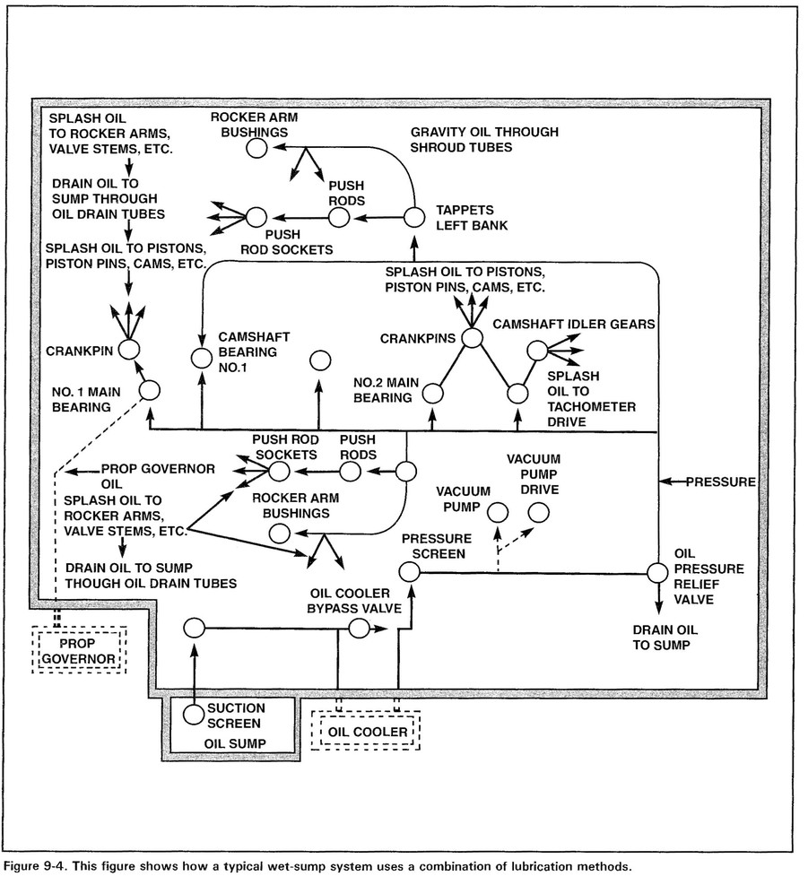
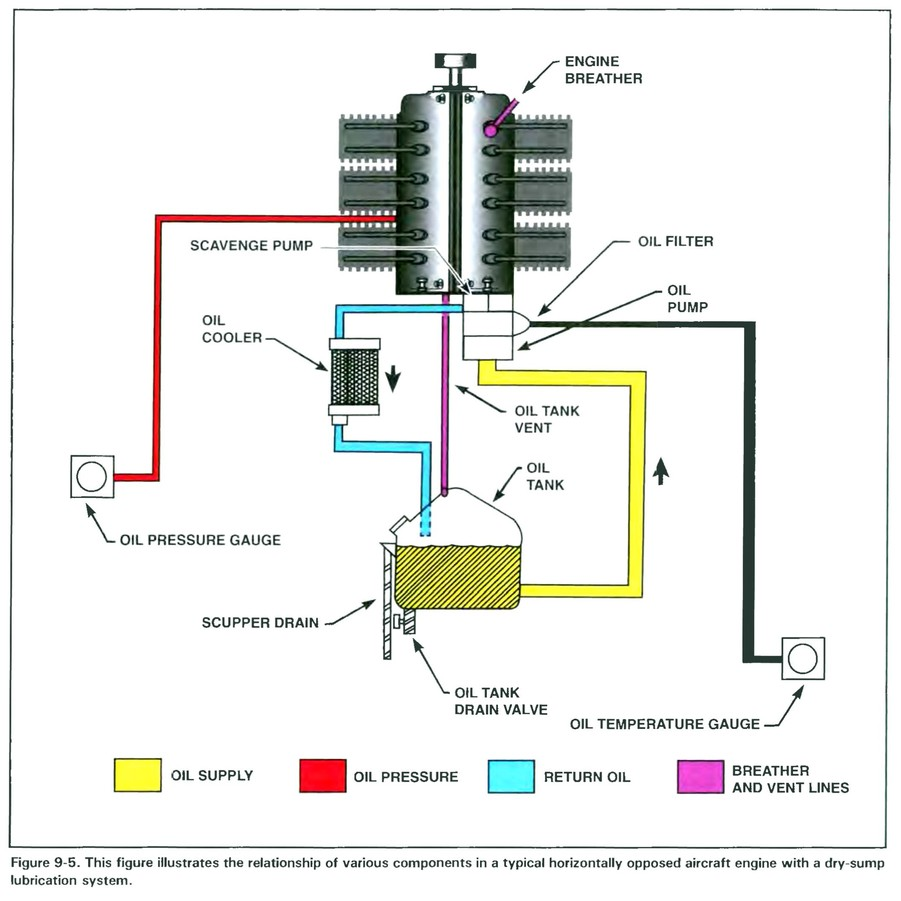
- A. 스플래시 또는 분무된 오일(splashed or sprayed oil).splashed or sprayed oil.
- B. 크랭크축·커넥팅로드·피스톤 핀을 통해 오일 컨트롤 링 홈으로 공급되는 직접 압력 계통.a direct pressure system fed through the crankshaft, connecting rods, and the piston pins to the oil control ring groove in the piston.
- C. 피스톤이 하사점에 있을 때 오일 컨트롤 링이 모은 오일.oil that is picked up by the oil control ring when the piston is at bottom center.
- A. 피스톤 스커트의 설계 형상.the design shape of the piston skirt.
- B. 링 홈을 지나는 내부 엔진 압력 블리딩.internal engine pressure bleeding past the ring grooves.
- C. 피스톤의 오일 컨트롤 링(oil control rings on the pistons).oil control rings on the pistons.
- A. 오일 쿨러와 스캐빈지 펌프.oil cooler and the scavenger pump.
- B. 스캐빈지 펌프와 외부 오일 계통.scavenger pump and the external oil system.
- C. 펌프와 내부 오일 계통(pump and the internal oil system).pump and the internal oil system.
- A. 스캐빈지 펌프.scavenger pump.
- B. 오일 온도 조절기.oil temperature regulator.
- C. 압력 펌프(pressure pump).pressure pump.
- A. 오일 분무 노즐 손상을 방지하기 위해.To prevent damage to the oil spray nozzle.
- B. 오일이 주 베어링에 들어가기 직전 여과하기 위해.To filter the oil immediately before it enters the main bearings.
- C. 윤활 계통에 깨끗한 오일 공급을 보장하기 위해.To assure a clean supply of oil to the lubrication system.
- A. 오일 거품 발생을 방지한다.Prevents foaming of the oil.
- B. 공기/오일 미스트로 더 나은 윤활을 위해 오일 폭기를 허용한다.Allows aeration of the oil for better lubrication because of the air/oil mist.
- C. 주 베어링 오일 제트에서 적절한 오일 분무 패턴을 제공한다.Provides a proper oil spray pattern from the main bearing oil jets.
- A. 오일 탱크 체크 밸브.Oil tank check valve.
- B. 오일 압력 릴리프 밸브.Oil pressure relief valve.
- C. 오일 탱크 벤트(vent).Oil tank vent.
- A. 스캐빈지 펌프가 프라임을 잃지 않게 한다.To prevent the scavenger pump from losing its prime.
- B. 비작동 기간 중 공급 탱크의 오일이 크랭크케이스로 새는 것을 막는다(prevent the oil from the supply tank from seeping into the crankcase).To prevent the oil from the supply tank from seeping into the crankcase during inoperative periods.
- C. 압력 펌프의 오일이 스캐빈지 계통으로 들어가는 것을 막는다.To prevent the oil from the pressure pump from entering the scavenger system.
- A. 왕복엔진 크랭크케이스의 압력 상승을 막기 위해.To prevent pressure buildup in the reciprocating engine crankcase.
- B. 오일 탱크의 거품을 없애기 위해.To eliminate foaming in the oil tank.
- C. 오일 탱크의 압력 상승을 막기 위해(prevent pressure buildup in the oil tank).To prevent pressure buildup in the oil tank.
- A. 압력 밸브.Pressure valve.
- B. 유압 퓨즈.Hydraulic fuse.
- C. 체크 밸브(Check valve).Check valve.
- A. 2쿼트(2 quarts).2 quarts.
- B. 4쿼트.4 quarts.
- C. 5쿼트.5 quarts.
- A. 볼(Ball).Ball.
- B. 롤러(Roller).Roller.
- C. 플레인(Plain).Plain.
- A. 오일 입구 라인(Oil inlet line).Oil inlet line.
- B. 오일 쿨러.Oil cooler.
- C. 오일 출구 라인.Oil outlet line.
오일 저장조·펌프·압력 릴리프 밸브와 오일 필터 심화 📙 Jeppesen 정독
Oil Reservoir, Pumps, Relief Valve, and Filters많은 항공기가 비행 중 오일 양을 표시하는 오일 수량 지시 계통을 갖춥니다. 한 방식은 오일 표면에 뜨는 플로트 기구가 탱크 상단의 전자 트랜스미터를 작동시켜, 트랜스미터가 조종석 게이지로 신호를 보내 수량을 지시합니다. 압력 축적을 막고 모든 비행 자세에서 적절한 통기를 보장하기 위해 오일 저장조는 대기로 통기돼야 합니다. 웻섬프 계통에서는 벤트가 크랭크케이스 브리더로 구성되고, 드라이섬프 계통에서는 벤트 라인이 보통 저장조에서 엔진 크랭크케이스로 이어져 벤트를 통한 오일 손실을 막으며, 저장조는 크랭크케이스 브리더를 통해 대기로 간접 통기됩니다.Many aircraft have an oil quantity indicating system showing oil quantity in flight: one uses a float on the oil surface actuating an electronic transmitter atop the tank that signals a cockpit gauge. To prevent pressure buildup and ensure ventilation in all attitudes, the reservoir must be vented to atmosphere—in a wet-sump system via a crankcase breather; in a dry-sump system, a vent line usually runs from the reservoir to the crankcase to prevent oil loss, with the reservoir indirectly vented through the crankcase breather.
일부 오일 저장조, 주로 대형 성형엔진용은 내장 호퍼(hopper), 즉 온도 가속 웰을 갖습니다. 호퍼는 시동 중 저장조 내 오일의 일부를 부분적으로 격리해 엔진을 순환하는 오일량을 줄여 더 빨리 데워지게 합니다. 전형적 호퍼는 오일 저장조 상단의 오일 리턴 피팅에서 저장조 하단의 출구 피팅까지 이어집니다. 일부 계통은 호퍼 탱크 하단이 열려 주 오일 공급에서 오일을 받고, 다른 계통은 소비된 만큼 호퍼에 오일을 보충하는 일련의 플래퍼 밸브를 씁니다. 웻섬프 계통의 저장조 오일은 보통 저장조로 뻗은 파이프를 통해 오일 펌프로 끌려 올라가고, 많은 드라이섬프 계통은 오일 출구가 저장조 최저점에 있습니다. 예외로 해밀턴 스탠다드 하이드로매틱 페더링 프로펠러 장착기는 스탠드파이프로 압력 펌프에 오일을 공급하고 프로펠러 페더링 공급 라인은 저장조 바닥에 설치되는데, 이는 오일 라인 파손으로 엔진 오일이 모두 배출돼도 프로펠러 페더링에 충분한 오일이 저장조에 남도록 보장합니다.Some reservoirs, mainly on large radials, have a built-in hopper (temperature-accelerating well) that partially isolates part of the oil during start-up to reduce circulating oil and warm up faster; a typical hopper runs from the return fitting on top to the outlet fitting at the bottom. Some systems open the hopper's lower end to admit main-supply oil; others use flapper valves to replenish it as consumed. Wet-sump reservoir oil is usually drawn up to the pump through a pipe extending into it, while many dry-sump systems place the outlet at the lowest point. An exception is aircraft with Hamilton-Standard Hydromatic feathering propellers: a standpipe feeds the pressure pump while the propeller-feathering line is at the tank bottom, ensuring enough oil remains to feather the propeller if a line breaks and all engine oil is pumped overboard.
모든 윤활 계통은 정변위(constant displacement) 펌프를 씁니다. 정변위 펌프는 펌프 회전·사이클마다 고정 체적의 유체를 이동시킵니다. 왕복엔진 윤활 계통의 두 정변위 펌프 형식은 기어 펌프와 제로터(gerotor) 펌프입니다. 제로터 펌프가 회전하면 구동 기어 톱니와 로터 하우징 사이 공간이 교대로 커지고 작아집니다. 오일 입구에서 공간이 커지면 오일이 펌프로 빨려 들고, 출구에서 공간이 작아지면 오일이 펌프 밖으로 밀려납니다. 모든 압력 윤활 계통은 적절한 계통 압력을 유지하기 위해 압력 릴리프 밸브가 필요합니다.All lubrication systems use constant-displacement pumps, moving a fixed volume per revolution or cycle; the two types in reciprocating systems are gear and gerotor pumps. As a gerotor pump rotates, the space between the drive-gear teeth and rotor housing alternately grows and shrinks: growing at the inlet draws oil in, shrinking at the outlet forces it out. Every pressure lubrication system needs a pressure relief valve to maintain proper system pressure.
현재 항공기 엔진에 설치되는 두 여과 계통은 풀플로우(full-flow) 계통과 바이패스(bypass) 계통입니다. 풀플로우 필터 계통에서는 오일이 엔진을 순환할 때마다 모든 오일이 필터를 통과하는데, 이를 위해 필터가 오일 펌프와 엔진 베어링 사이에 직렬로 놓입니다. 덜 흔하지만 일부 구형 엔진은 바이패스(부분 유량) 여과 계통을 쓰는데, 필터가 엔진 베어링으로 가는 통로와 병렬이어서 오일 순환 시마다 약 10퍼센트만 여과되지만 시간이 지나면 전체 오일이 필터를 통과합니다. 연방 항공 규정은 모든 오일 필터를 필터가 완전히 막혀도 전체 오일 흐름을 허용하도록 제작·설치하게 규정합니다. 바이패스 계통은 대부분의 오일이 이미 필터를 우회하므로 이를 쉽게 충족하지만, 풀플로우 계통은 필터를 우회할 수단이 있어야 합니다. 한 방법은 필터가 막히면 오일이 필터를 완전히 우회하게 하는 오일 바이패스 밸브를 포함하는 것이고, 다른 방법은 필터 내부의 스프링 부하 바이패스 밸브를, 또 다른 방법은 압력이 과도하면 붕괴하는 필터 요소를 씁니다. 항공용으로 승인된 여과 방식은 뎁스·세미뎁스·표면·에지 여과 네 가지입니다.Two filtration systems are used today: full-flow and bypass. In a full-flow system, all oil passes through the filter each circulation, with the filter in series between pump and bearings. Less common, some older engines use a bypass (partial-flow) system where the filter parallels the passages to the bearings, filtering only about 10 percent each pass but eventually filtering all the oil. Federal regulations require every filter to permit full flow even if completely blocked; bypass systems meet this easily since most oil already bypasses, but full-flow systems need a bypass means—an oil bypass valve that fully bypasses a plugged filter, a spring-loaded bypass valve inside the filter, or filter elements that collapse under excessive pressure. Four filtration methods are approved for aviation: depth, semi-depth, surface, and edge filtration.
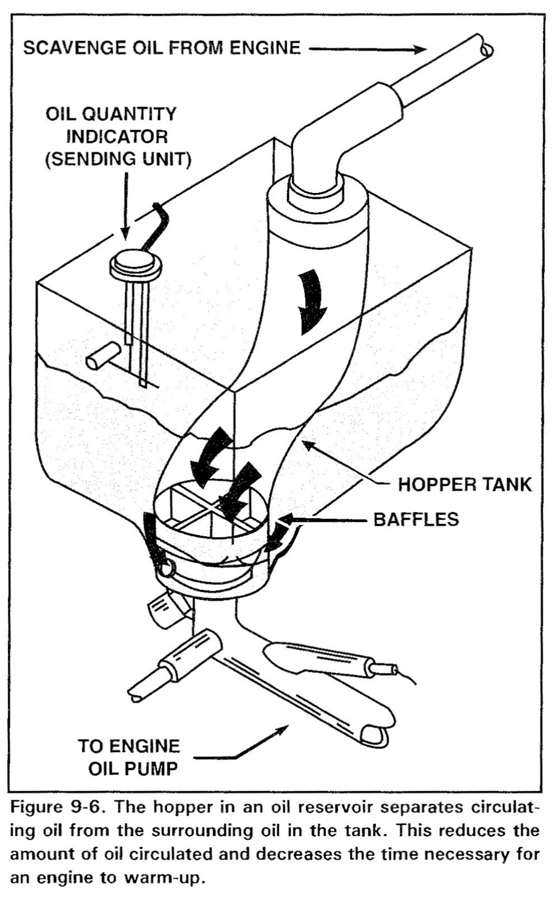
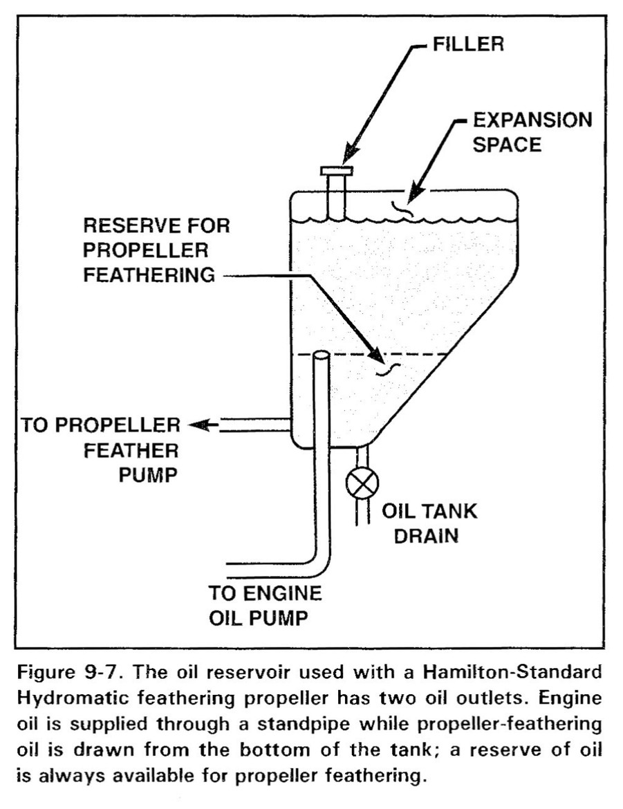
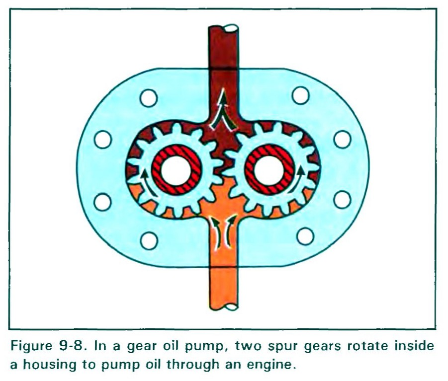
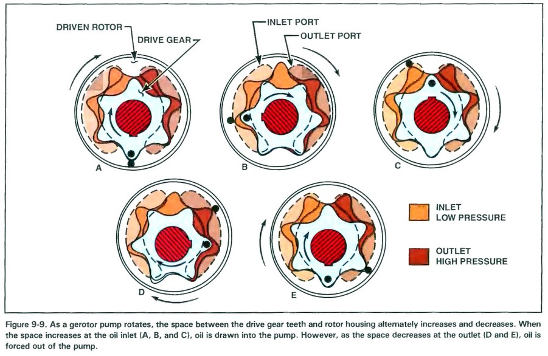
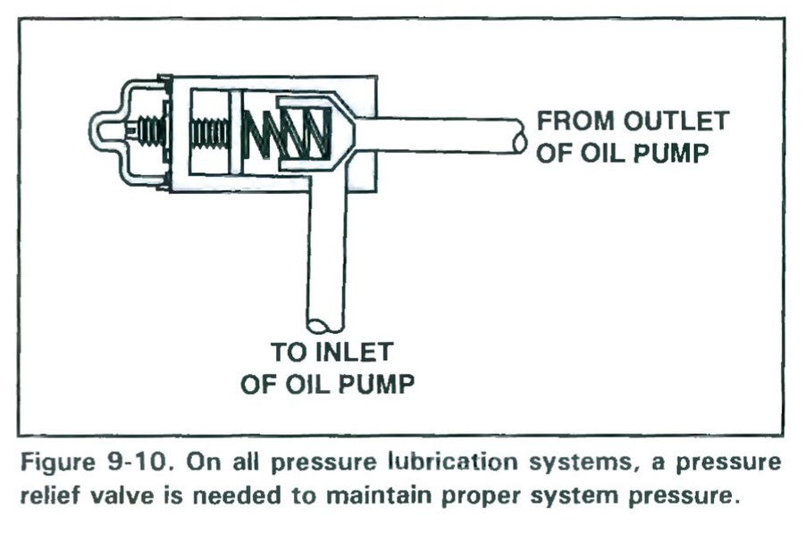
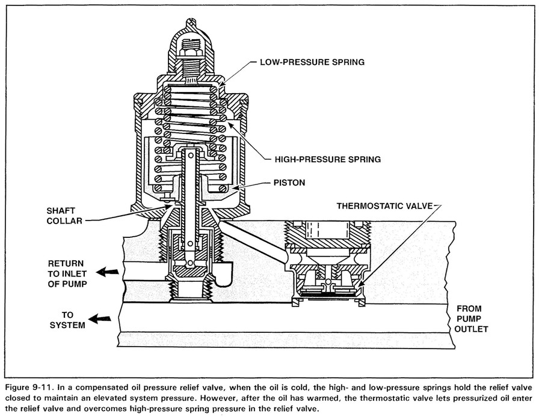
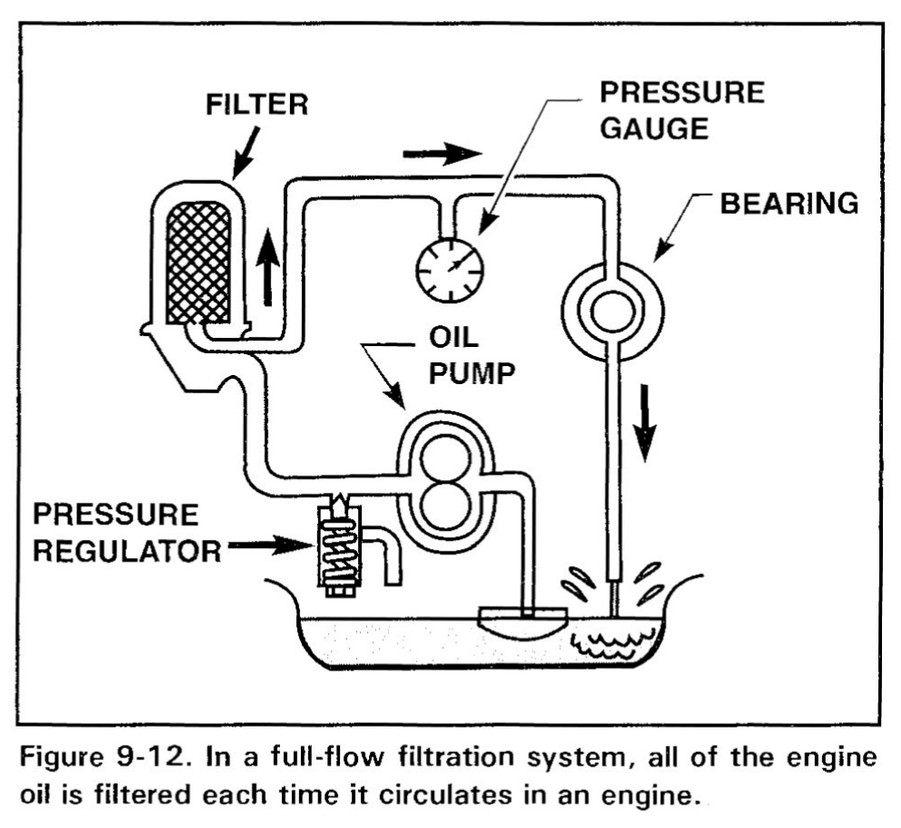
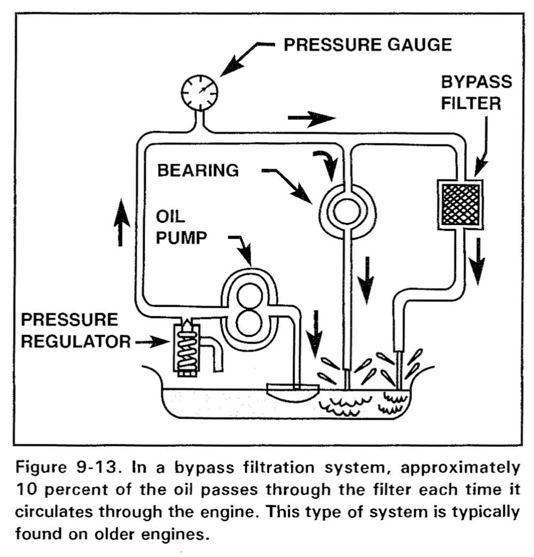
- A. 오일 온도 벌브.Oil temperature bulb.
- B. 오일 희석(dilution) 계통의 연료 라인.Fuel line for oil dilution system.
- C. 체크 밸브.Check valve.
- A. 펌프 흡입 압력보다 낮은.lower than the pump inlet pressure.
- B. 펌프 압력 능력보다 낮은.lower than the pressure pump capabilities.
- C. 펌프 압력 능력보다 높은(higher than pressure pump capabilities).higher than pressure pump capabilities.
- A. 오일 압력 릴리프 밸브(Oil pressure relief valve).Oil pressure relief valve.
- B. 오일 점도 밸브.Oil viscosity valve.
- C. 오일 펌프.Oil pump.
- A. 오일이 계통을 통해 감소된 유량으로 흐른다.Oil will flow at a reduced rate through the system.
- B. 엔진으로 가는 오일 흐름이 멈춘다.Oil flow to the engine will stop.
- C. 오일이 계통을 통해 정상 유량으로 흐른다(flow at the normal rate).Oil will flow at the normal rate through the system.
- A. 다양한 비행 자세에서의 적절한 윤활.Adequate lubrication in various attitudes of flight.
- B. 베어링으로의 적극적 오일 공급.Positive introduction of oil to the bearings.
- C. 베어링의 운전 속도(operating speeds of bearings).Operating speeds of bearings.
- A. 오일 압력 증가.Increased oil pressure.
- B. 오일 온도 감소.Decreased oil temperature.
- C. 불충분한 윤활(Insufficient lubrication).Insufficient lubrication.
- A. 오일 펌프 입구에 일정 압력을 유지해 펌프 캐비테이션을 방지한다(prevent oil pump cavitation).prevent oil pump cavitation by maintaining a constant pressure on the oil pump inlet.
- B. 고도나 변화율과 무관하게 탱크 내부 공기 압력을 주변 대기 수준으로 유지한다.maintain internal tank air pressure at the ambient atmospheric level regardless of altitude or rate of change in altitude.
- C. 시동 시 펌프 캐비테이션을 막기 위해 정지 후 탱크 내부에 양압을 유지한다.maintain a positive internal pressure in the oil tank after shutdown to prevent oil pump cavitation on engine start.
- A. 오일을 작동 온도로 데우는 시간을 줄이기 위해(reduce the time required to warm the oil).To reduce the time required to warm the oil to operating temperatures.
- B. 뜨거운 오일의 표면 폭기를 줄여 산화·슬러지·바니시 형성을 줄이기 위해.To reduce surface aeration of the hot oil and thus reduce oxidation and the formation of sludge and varnish.
- C. 탱크로 들어오는 오일에 원심 운동을 줘 이물질이 더 잘 분리되게 하기 위해.To impart a centrifugal motion to the oil entering the tank so that the foreign particles in the oil will separate more readily.
- A. 1, 2 모두 옳다.both 1 and 2 are true.
- B. 2만 옳다(only 2 is true).only 2 is true.
- C. 1, 2 모두 틀리다.neither 1 nor 2 is true.
- A. 오일 공급 펌프 용량보다 크다(greater than the capacity of the oil supply pump).is greater than the capacity of the oil supply pump.
- B. 오일 공급 펌프 용량보다 작다.is less than the capacity of the oil supply pump.
- C. 일정한 오일링 조건 유지를 위해 보통 오일 공급 펌프 용량과 같다.is usually equal to the capacity of the oil supply pump in order to maintain constant oiling conditions.
- A. 오일 공급 펌프 캐비테이션 방지를 위한 오일 공급 가압.pressurization of the oil supply to prevent cavitation of the oil supply pump.
- B. 엔진의 오일 증기가 응축되어 오일 공급 탱크로 배출.oil vapors from the engine to be condensed and drained into the oil supply tank.
- C. 정상 엔진 벤트를 통한 오일 탱크 환기(oil tank to be vented through the normal engine vent).the oil tank to be vented through the normal engine vent.
- A. 오일 거품을 없애기 위해.To eliminate oil foaming.
- B. 오일 팽창과 거품 수집을 위해(For oil enlargement and collection of foam).For oil enlargement and collection of foam.
- C. 적절한 오일 탱크 환기를 위해.For proper oil tank ventilation.
- A. 엔진 오일 공급 펌프와 내부 윤활계통.The engine oil supply pump and the internal lubrication system.
- B. 스캐빈저 펌프 출구와 오일 저장 탱크(scavenger pump outlet and the oil storage tank).The scavenger pump outlet and the oil storage tank.
- C. 오일 저장 탱크와 엔진 오일 공급 펌프.The oil storage tank and the engine oil supply pump.
- A. 오일이 엔진에 축적된다.Oil will accumulate in the engine.
- B. 귀환 오일이 기외로 펌핑된다(pumped overboard).The return oil will be pumped overboard.
- C. 스캐빈저 귀환 라인 체크밸브가 닫혀 오일을 압력 펌프 흡입측으로 우회시킨다.The scavenger return line check valve will close and force the oil to bypass directly to the intake side of the pressure pump.
오일 필터 요소·오일 쿨러와 오일 온도 조절 심화 📙 Jeppesen 정독
Oil Filter Elements, Oil Cooler, and Temperature Regulation뎁스 필터는 약 1인치 깊이로 촘촘히 채운 섬유 매트릭스로 구성되며, 깊이가 여과되는 오염 입자 크기를 결정합니다. 표면 여과 방식의 하나로 많은 항공기 엔진은 스크린 표면 여과 오일 스트레이너를 쓰는데, 오일 스트레이너는 큰 입자를 걸러내고 다른 여과 요소가 막히는 것을 방지합니다. 에지 필터의 하나인 스파이럴 와운드 에지 필터는 쐐기형 금속 긴 조각을 나선으로 감아 만들며, 각 감김마다 설치된 스페이서가 오일이 나선을 통과하게 하고 오염물은 나선 바깥쪽에 모입니다. 일부 엔진은 필터 하우징을 재사용하며 그 안의 일회용 필터 요소만 필요에 따라 교체합니다.Depth filters are a matrix of fibers closely packed to about one inch deep, the depth determining the size of contaminants filtered out. As a surface method, many engines use a screen surface-filtration oil strainer, which filters large particles and prevents other elements from clogging. An edge type, the spiral-wound edge filter, is a long wedge-shaped metal piece wound into a spiral with spacers on each turn letting oil pass, contaminants collecting on the outside. Some engines reuse the filter housing while replacing its disposable element as needed.
또 다른 에지 필터인 CUNO 필터에서는 깊이가 여과되는 입자 크기를 결정합니다. 주기적으로 디스크 바깥 가장자리에서 오염물을 긁어내야 하는데, 중심 샤프트에 핸들을 부착해 디스크를 돌립니다. 스페이서가 필터 하우징에 단단히 고정돼 정지 상태를 유지하며 스크레이퍼 역할을 합니다. 디스크에서 긁힌 오염물은 필터 하우징 바닥에 모여 정비 검사 때 청소됩니다. CUNO 필터는 많은 대형 성형 왕복엔진에 흔히 쓰였으나 오늘날 운용 항공기에서는 거의 볼 수 없습니다.In another edge filter, the CUNO filter, depth determines the particle size filtered; contaminants must periodically be scraped from the disks' outer edge by attaching a handle to the center shaft to rotate them, while spacers fixed rigidly to the housing stay stationary and act as scrapers. Scraped contaminants collect in the housing bottom and are cleaned out at maintenance inspections. CUNO filters were common on many large radial engines but are seldom found on aircraft today.
오일의 한 기능은 엔진을 냉각하는 것으로, 이를 효과적으로 하려면 오일이 흡수한 열을 제거해야 합니다. 대부분의 경우 과잉 열은 오일 쿨러(오일 온도 조절기)로 제거됩니다. 오일 쿨러는 단순히 오일-공기 열교환기입니다. 드라이섬프 계통에 설치되면 오일 쿨러는 보통 스캐빈지 펌프 출구와 저장조 사이의 리턴 라인에 위치하고, 웻섬프 계통에서는 제조사가 정한 최적 위치에서 엔진에 부착됩니다. 한 형식의 오일 쿨러는 이중벽 환형 셸에 담긴 여러 구리·알루미늄 튜브의 코어로 구성됩니다. 오일이 차가우면 두 벽 사이(쿨러의 바이패스 재킷)를 흘러 코어를 완전히 우회하고, 데워진 뒤에는 냉각을 위해 코어로 흐릅니다. 코어를 지나는 오일량은 서모스탯 컨트롤 밸브(오일 쿨러 바이패스 밸브 또는 유량 제어 밸브)가 제어합니다.One function of oil is to cool the engine, requiring heat absorbed by the oil to be removed—usually by an oil cooler (oil temperature regulator), simply an oil-to-air heat exchanger. In a dry-sump system it's typically in the return line between scavenge-pump outlet and reservoir; in a wet-sump, attached to the engine at the manufacturer's best location. One type is a core of copper or aluminum tubes in a double-walled annular shell: cold oil flows between the walls (the bypass jacket) and bypasses the core entirely, but once warm it routes through the core; the amount through the core is set by a thermostatic control valve (oil cooler bypass or flow control valve).
앞의 예에서 바이패스 밸브는 오일 쿨러의 일부로, 성형엔진 오일 쿨러에서 전형적입니다. 그러나 수평대향 엔진에서는 쿨러와 바이패스 밸브가 보통 병렬로 설치된 별도 유닛이어서 오일 쿨러 주위 바이패스 재킷이 필요 없습니다. 이 계통에서는 오일이 차가우면 엔진 윤활 통로에 남아 쿨러를 완전히 우회하고, 데워지면 바이패스 밸브가 일부 오일을 쿨러로 흐르게 합니다. 바이패스 밸브가 개방·폐쇄 어느 위치로 고장 나도 오일은 엔진을 계속 순환합니다. 다만 오일 쿨러 통로가 부분적으로 막히면 오일 흐름이 줄 수 있는데, 통로가 부분 막히면 코어를 지나는 오일이 줄어 오일 온도가 상승하고, 온도가 오르면 바이패스 밸브가 더 닫혀 부분 제한된 코어로 더 많은 오일을 보내며, 이는 다시 엔진을 순환하는 오일량을 제한합니다.Previously the bypass valve was part of the oil cooler, typical on radial engines; on horizontally opposed engines, the cooler and bypass valve are usually separate parallel units, eliminating the bypass jacket. Here cold oil stays in the engine's passages and bypasses the cooler entirely, and once warm the bypass valve forces some oil through the cooler. If the bypass valve fails open or closed, oil keeps circulating; but a partially clogged cooler passage can reduce flow—less oil through the core raises temperature, and as it rises the bypass valve closes further to push more oil through the restricted core, limiting oil circulating through the engine.
드라이섬프 계통에서 차가운 오일이 응고하면 스캐빈지 펌프가 오일 리턴 라인에 잠재적으로 유해한 고압을 형성할 수 있습니다. 이 고압이 오일 쿨러나 호스 연결을 손상시키는 것을 막기 위해 일부 오일 쿨러는 서지 보호 밸브(surge protection valve)를 포함합니다. 전형적 서지 보호 밸브는 오일 쿨러 입구에 설치되어 스프링 압력으로 상시 닫힘 위치에 유지됩니다. 쿨러 내 오일이 심하게 응고되면 쿨러 입구에서 오일 압력이 형성돼 서지 밸브에 작용하는 스프링 압력을 이기고, 오일 압력이 서지 밸브를 열면 오일이 쿨러를 완전히 우회해 엔진을 계속 순환합니다. 엔진·쿨러의 응고된 오일이 데워지면 오일 압력이 서지 밸브가 앉을 만큼 감소해 오일이 쿨러의 바이패스 재킷을 흐르고, 엔진이 작동 온도에 도달하면 바이패스 밸브가 닫혀 오일이 쿨러 코어로 흐르기 시작합니다. 오일 쿨러를 지나는 공기 흐름을 조절하면 여러 작동 요건에 맞춰 오일 온도를 제어할 수 있습니다. 예를 들어 엔진 워밍업 중 오일 쿨러로의 공기 흐름을 차단하면 엔진 오일이 더 빨리 작동 온도에 도달합니다. 성형엔진 오일 쿨러의 공기 흐름 제어는 오일 쿨러 후면에 설치된 셔터나 공기 배출 덕트의 조종 가능한 플랩으로 달성됩니다.In a dry-sump system, congealed cold oil can let the scavenge pump build harmful high pressure in the return line; to protect the cooler and hoses, some coolers include a surge protection valve, installed at the cooler inlet and normally held closed by spring pressure. If oil in the cooler severely congeals, inlet pressure builds and overcomes the spring, opening the surge valve so oil bypasses the cooler entirely and keeps circulating. As the congealed oil warms, pressure drops enough for the surge valve to seat, letting oil flow through the bypass jacket, and once at operating temperature the bypass valve closes and oil flows through the core. Regulating airflow through the cooler controls oil temperature for various requirements—cutting airflow during warm-up brings oil to operating temperature faster; on radial engines, airflow is controlled by shutters on the cooler rear or a controllable flap on the air-exit duct.
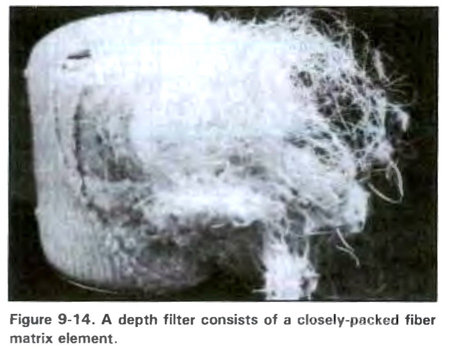
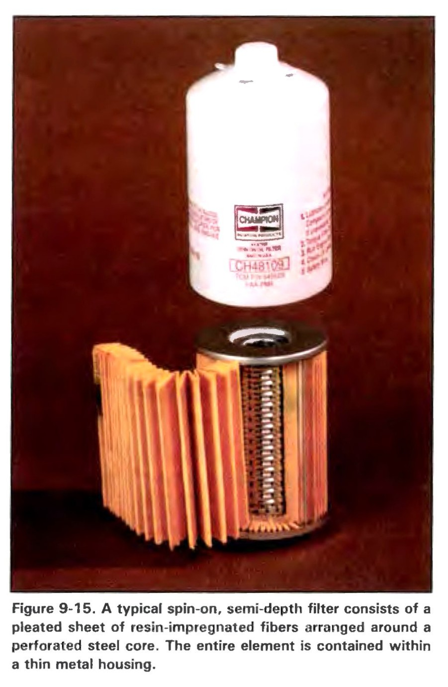
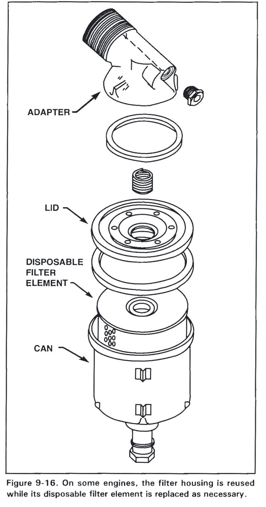
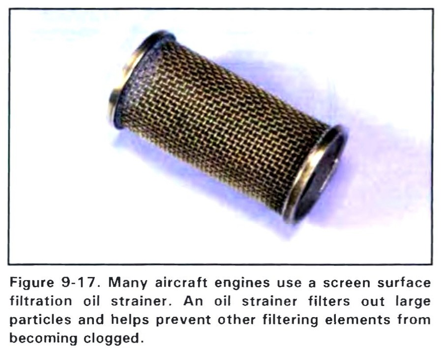
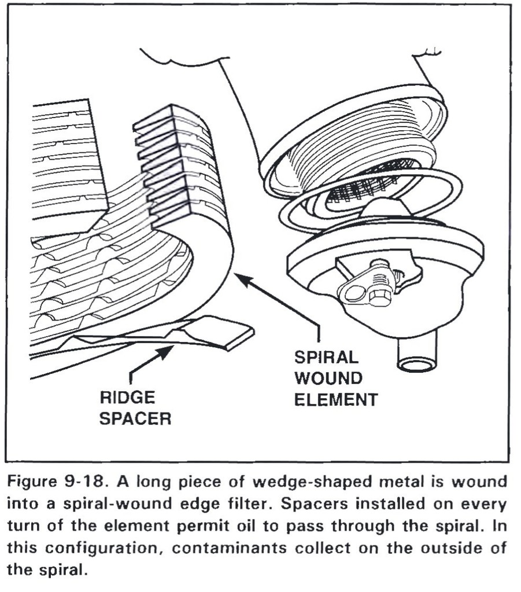
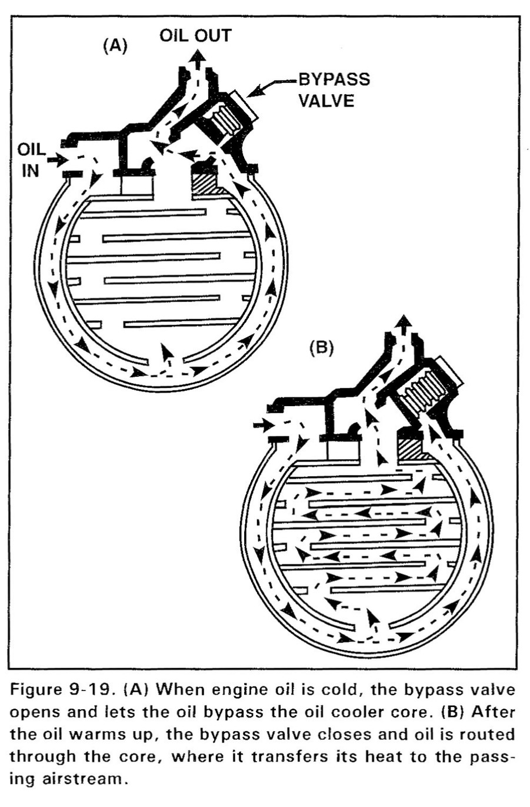
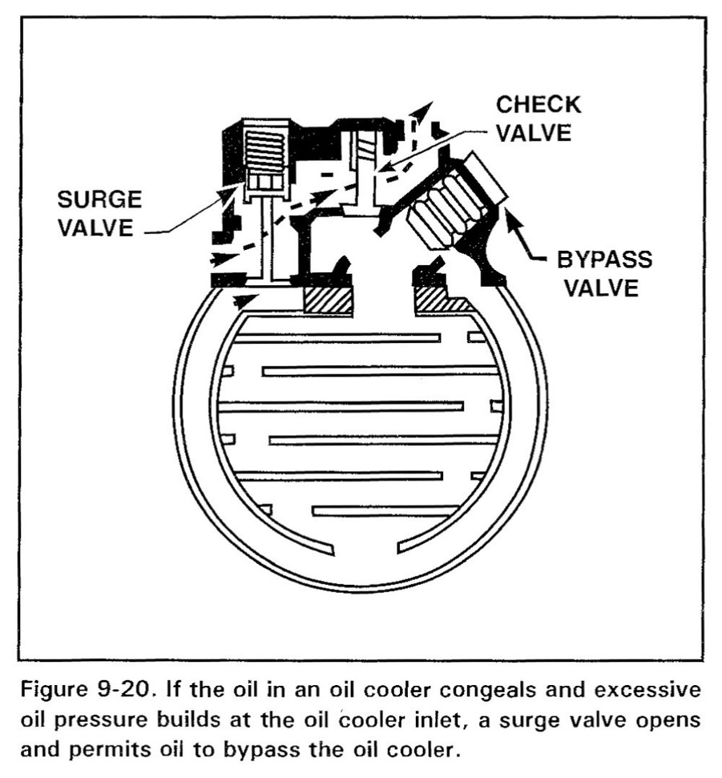
- A. 역방향 오일 컨트롤 링.reversed oil control rings.
- B. 밸브 작동 기구 윤활유를 별도 스캐빈지 펌프로 보내기.routing the valve-operating mechanism lubricating oil to a separate scavenger pump.
- C. 연장된 실린더 스커트(extended cylinder skirts).extended cylinder skirts.
- A. 온도 조절기가 열린 채 고착.the temperature regulator sticking open.
- B. 바이패스 밸브가 열린 채 고착.the bypass valve sticking open.
- C. 릴리프 밸브 아래 끼인 이물질(foreign material under the relief valve).foreign material under the relief valve.
- A. 디스크 두께.The disc thickness.
- B. 스페이서 두께(spacer thickness).The spacer thickness.
- C. 어셈블리 내 디스크의 개수와 두께 모두.Both the number and thickness of the discs in the assembly.
- A. 건식 섬프, 압력식, 분무식(Dry sump, pressure, and spray).Dry sump, pressure, and spray.
- B. 건식 섬프, 디프, 스플래시.Dry sump, dip, and splash.
- C. 습식 섬프, 분무, 스플래시.Wet sump, spray, and splash.
- A. 열교환기를 통과하는 연료.fuel through the heat exchanger.
- B. 열교환기를 통과하는 연료와 오일 모두.both fuel and oil through the heat exchanger.
- C. 열교환기를 통과하는 오일(oil).oil through the heat exchanger.
- A. 연료를 폭기(aerate)시킨다.Aerates the fuel.
- B. 오일을 유화(emulsify)시킨다.Emulsifies the oil.
- C. 연료 온도를 높인다(Increases fuel temperature).Increases fuel temperature.
- A. 오일쿨러 통과 오일흐름 제어controlling oil flow through the oil cooler.
- B. 섬프로 핫오일 재순환recirculating hot oil back through the sump.
- C. 오일쿨러 통과 공기흐름 제어controlling air flow through the oil cooler.
- A. 프로펠러 백워시로 엔진을 냉각하는 수단.A means of cooling the engine by utilizing the propeller backwash.
- B. 카트리지 스타터를 장전하는 데 쓰는 튜브.A tube used to load a cartridge starter.
- C. 엔진 액세서리를 냉각하는 장치(device to cool an engine accessory).A device to cool an engine accessory.
- A. 오일이 오일 쿨러를 통과한 후 지점(after the oil has passed through the oil cooler).at a point after the oil has passed through the oil cooler.
- B. 엔진의 가장 뜨거운 부위에서.while the oil is in the hottest area of the engine.
- C. 오일이 오일 쿨러에 들어가기 직전.immediately before the oil enters the oil cooler.
- A. 오일 쿨러를 통과하거나 우회하도록 오일을 보낸다(direct oil through or around the oil cooler).direct oil through or around the oil cooler.
- B. 호퍼 탱크로 차가운 오일을 공급한다.deliver cold oil to the hopper tank.
- C. 오일 거품으로 인한 체적 증가를 보상한다.compensate for volumetric increases due to foaming of the oil.
- A. 엔진 오일이 정상 작동 온도 이상일 때.Engine oil above normal operating temperature.
- B. 엔진 오일이 정상 작동 온도 이하일 때(below normal operating temperature).Engine oil below normal operating temperature.
- C. 런업 후 오일이 흐르지 않고 엔진이 정지했을 때.Engine stopped with no oil flowing after runup.
- A. 오일 쿨러 입구(Oil cooler inlet).Oil cooler inlet.
- B. 엔진 출구.Engine outlet.
- C. 엔진 입구.Engine inlet.
- A. 엔진에서 돌아오는 오일 온도가 너무 높을 때.When the temperature of the oil returning from the engine is too high.
- B. 엔진에서 돌아오는 오일 온도가 너무 낮을 때(too low).When the temperature of the oil returning from the engine is too low.
- C. 스캐빈지 펌프 출력량이 엔진 펌프 입력량을 초과할 때.When the scavenger pump output volume exceeds the engine pump input volume.
- A. 오일 압력 릴리프 밸브.Oil pressure relief valve.
- B. 에어플로우 컨트롤 밸브.Airflow control valve.
- C. 서지 보호 밸브(Surge protection valve).Surge protection valve.
오일 압력·온도 게이지와 윤활 계통 정비 심화 📙 Jeppesen 정독
Oil Pressure/Temperature Gauges and System Maintenance오일 압력 계기 지시는 엔진 작동의 중요한 지표로, 특히 엔진 시동 중 자주 감시해야 합니다. 예를 들어 시동 중 많은 항공기 매뉴얼은 오일 압력 징후가 없으면 더운 날씨에는 30초, 극한의 추운 날씨에는 1분 후 엔진을 정지하도록 지시합니다. 엔진 정지는 오일 압력 부재의 원인을 규명·시정할 때까지 엔진 손상을 막는 예방책입니다. 다른 결함으로 과도한 포인터 진동은 보통 감지 라인에 공기가 갇혔거나 오일 계통의 어떤 유닛이 오작동함을 의미합니다. 또한 낮은 오일 압력이나 0에서 정상까지의 변동은 낮은 오일 양의 징후일 수 있습니다.Oil pressure readings are a critical engine indicator, monitored frequently especially during start. Many manuals instruct shutting down after 30 seconds in warm weather (one minute in extreme cold) if no oil pressure appears—a precaution against damage until the cause is found and fixed. Excessive pointer oscillation usually means air trapped in the sense line or a malfunctioning oil-system unit, and low pressure or fluctuation from zero to normal can indicate low oil quantity.
오일 온도 게이지는 조종사가 엔진으로 들어가는 오일 온도를 감시하게 합니다. 오일 순환이 가동부를 윤활하며 엔진을 냉각하므로 온도가 중요합니다. 대부분의 오일 온도 게이지는 화씨로 교정되고 엔진 오일 입구에서 온도를 감지합니다. 대부분의 현대 오일 온도 계통은 전기식으로 휘트스톤 브리지 회로나 레이시오미터 회로를 씁니다. 휘트스톤 브리지 회로는 고정 저항 3개와 온도에 따라 저항이 변하는 가변 저항 1개로 구성됩니다. 네 저항이 모두 같으면 브리지 접점 간 전위차가 없지만, 가변 저항이 열에 노출되면 저항이 커져 갈바노미터를 통해 전류가 흐르고, 전압 차가 클수록 지침 편향이 커집니다. 지시 전류가 오일 온도에 정비례하므로 도(°) 단위 교정 지시기가 정확한 온도를 나타냅니다. 레이시오미터 회로는 전류 비를 측정하며, 특히 공급 전압이 변할 때 휘트스톤 브리지보다 신뢰성이 높습니다. 레이시오미터는 영구 자석 극 사이에서 피벗하는 로터에 감긴 두 코일로 미터 무브먼트를 형성하며, 한 분기는 고정 저항·코일을, 다른 분기는 가변 저항·코일을 씁니다.The oil temperature gauge lets a pilot monitor oil entering the engine—important because circulating oil cools the engine while lubricating. Most gauges read in Fahrenheit and sense at the oil inlet. Most modern systems are electric, using a Wheatstone bridge or ratiometer. A Wheatstone bridge has three fixed resistors and one variable resistor changing with temperature: with all equal there's no potential difference across the junctions, but heat raises the variable resistance, driving current through a galvanometer, and greater voltage difference means greater needle deflection; since indicator current is directly proportional to oil temperature, a degree-calibrated indicator reads it accurately. A ratiometer measures a current ratio and is more reliable than a bridge, especially when supply voltage varies, forming a meter movement with two coils on a rotor pivoting between permanent-magnet poles—one branch with a fixed resistor and coil, the other variable.
사용 중 오일에 갇힐 수 있는 오염물에는 가솔린, 수분, 산, 먼지, 카본, 금속 입자가 있습니다. 이들이 시간이 지나며 축적되면 내부 엔진 부품에 과도한 마모를 유발할 수 있습니다. 내부 엔진 마모를 나타내는 단서로 오일 누출 증거 없는 과도한 오일 소비가 있는데, 이는 보통 마모된 피스톤 링을 지나 오일이 새어 연소실에서 소비되는 것이 원인입니다. 이런 손상을 막기 위해 전체 윤활 계통을 정기 간격으로 배출하고 깨끗한 새 오일로 다시 채우며, 권장 오일 교환 간격은 보통 제조사 권고에 근거합니다. 엔진 오일 배출 전에 엔진을 런업해야 하는데, 오일을 데우는 것 외에 예비 검사 런업은 오일 온도·압력이 허용 한계 내인지 확인하게 하고, 오일 공급을 교반해 최대량의 오염물을 부유시켜 배출 시 대부분의 오염물이 엔진에서 빠져나오게 합니다.Contaminants trapped in oil include gasoline, moisture, acids, dirt, carbon, and metal particles; accumulating over time, they cause excessive wear. A clue to internal wear is excessive oil consumption with no leakage—usually oil leaking past worn piston rings and burning in the combustion chambers. To prevent this, the whole system is drained at regular intervals and refilled with fresh oil per the manufacturer's recommended interval. Before draining, run up the engine: besides warming the oil, a pre-inspection runup verifies temperature and pressure are within limits and agitates the oil to suspend maximum contaminants so most drain out.
오일 자체에 과도한 수의 금속 입자가 존재하면 일반적으로 엔진 내부 고장을 의미합니다. 항공기 오일 계통 구조상 이전 엔진 부품 고장에서 나온 금속 입자가 슬러지에 남아 있을 수 있고, 엔진 내부에서 떨어져 나온 카본 축적물이 금속 입자로 오인될 수 있음에 유의합니다. 어느 경우든 오일 내 이물질의 출처를 식별하고 비행 전에 적절히 시정해야 합니다. 입자 조성을 판별하는 한 방법은 평평한 금속물에 놓고 망치로 치는 것으로, 카본 입자는 부서지고 금속이면 전성에 따라 그대로 있거나 형태가 변합니다. 금속 입자를 발견하면 자석으로 페러스(철)인지 논페러스(비철)인지 판별하는데, 페러스 입자는 보통 피스톤 링 마모에서, 논페러스는 마모된 메인 베어링에서 나옵니다. 오일 내 이물질의 종류·양을 식별하는 가장 정확한 방법은 시료를 실험실로 보내 분석하는 분광 오일 분석 프로그램(SOAP, spectrometric oil analysis program)입니다. 분석 후 실험실이 입자의 종류·양·가능 출처 보고서를 제공하고, 검출 금속량이 급증하면 운영자에게 전화로 연락합니다. SOAP는 비교 기준선을 제공하기 위해 정기적으로 시험해야 하며, 잘 준수된 오일 분석 프로그램은 문제가 심각해지기 전에 감지해 치명적 엔진 고장을 예방합니다.Excessive metal particles in oil generally indicate internal failure; note that particles from a prior failure can remain in sludge, and carbon breaking loose can be mistaken for metal. Either way, identify the source and correct it before flight. To identify a particle, place it on flat metal and strike it with a hammer—carbon disintegrates, metal stays intact or deforms by malleability; use a magnet to tell ferrous from nonferrous (ferrous usually from piston-ring wear, nonferrous from worn main bearings). The most accurate method is a spectrometric oil analysis program (SOAP): a lab analyzes a sample and reports the type, quantity, and likely source, phoning the operator on a sudden increase. SOAP must be done regularly to establish a baseline, and a closely followed program prevents catastrophic failure by early detection.
오일 필터 교체·검사는 보통 오일 교환 때마다 수행합니다. 일회용 필터 교체 시 사용한 필터를 절개해 금속 입자 유무를 검사하는 것이 일반적 관행이며, 밀봉 스핀온 필터는 특수 롤러 캔 커터로 여는데 이 커터는 임박한 엔진 문제의 거짓 지시를 줄 금속 입자를 만들지 않고 용기 상단을 제거합니다. 오일 스크린 장착 엔진을 정비할 때는 스크린을 제거·검사·세척하며, 스크린 제거 시 엔진에서 배출될 오일을 받도록 깨끗한 용기를 하우징 밑에 둡니다(오염 용기는 임박한 고장을 거짓 지시할 수 있음). 스크린에 걸릴 만큼 큰 금속 입자는 임박한 내부 고장을 나타낼 수 있고, 검사 후 승인 용제로 세척해 재설치합니다. 드라이섬프 계통에서 세척·수리를 위해 오일 저장조를 장탈할 때는 오일을 모두 배출하고 오일 입구·벤트 라인을 분리한 뒤 스커퍼 드레인 호스와 본딩 와이어를 제거하고 안전선·탱크 고정 스트랩 클램프를 풀어 탱크를 들어냅니다. 오일 쿨러는 보통 엔진 오버홀 시 장탈·세척하며, 냉각 효과 일부를 잃은 쿨러는 슬러지가 내부를 막았을 수 있어 장탈·세척 후 균열·손상을 육안 검사하고 용접·납땜 이음새에 주의하며 세척·수리 후 제조사 지침대로 압력 시험합니다. 오일 압력 릴리프 밸브 조정도 필요할 수 있는데, 오일 압력 규격은 엔진 모델에 따라 보통 35~90psi이며, 고속·고출력에서 적절한 윤활을 보장할 만큼 높되 누출·손상을 유발할 만큼 과도하지 않아야 합니다. 조정은 커버 너트를 제거하고 록너트를 푼 뒤 조정 나사를 시계 방향으로 돌려 압력을 높이거나 반시계 방향으로 돌려 낮춥니다.Filter replacement and inspection is normally done at each oil change: cut open a disposable filter to inspect for metal, opening sealed spin-on filters with a special roller can cutter that removes the top without introducing false-indicating metal. On screen-equipped engines, remove, inspect, and clean the screen, placing a clean container under the housing (a dirty one could falsely indicate failure); particles large enough to be trapped may indicate impending failure, and after inspection clean with approved solvent and reinstall. To remove a dry-sump reservoir for cleaning, drain the oil, disconnect inlet and vent lines, remove the scupper drain hose and bonding wire, remove safety wire and loosen strap clamps, and lift the tank out. Oil coolers are normally removed and cleaned at overhaul; one losing cooling effectiveness may have sludge blocking it, so remove, clean, inspect for cracks (watching welded/soldered seams), and pressure-test per instructions. The oil pressure relief valve may need adjustment—specs typically run 35 to 90 psi by model, high enough for adequate lubrication at high speed and power but not so high as to cause leakage or damage; adjust by removing the cover nut, loosening the locknut, and turning the screw clockwise to raise or counter-clockwise to lower pressure.
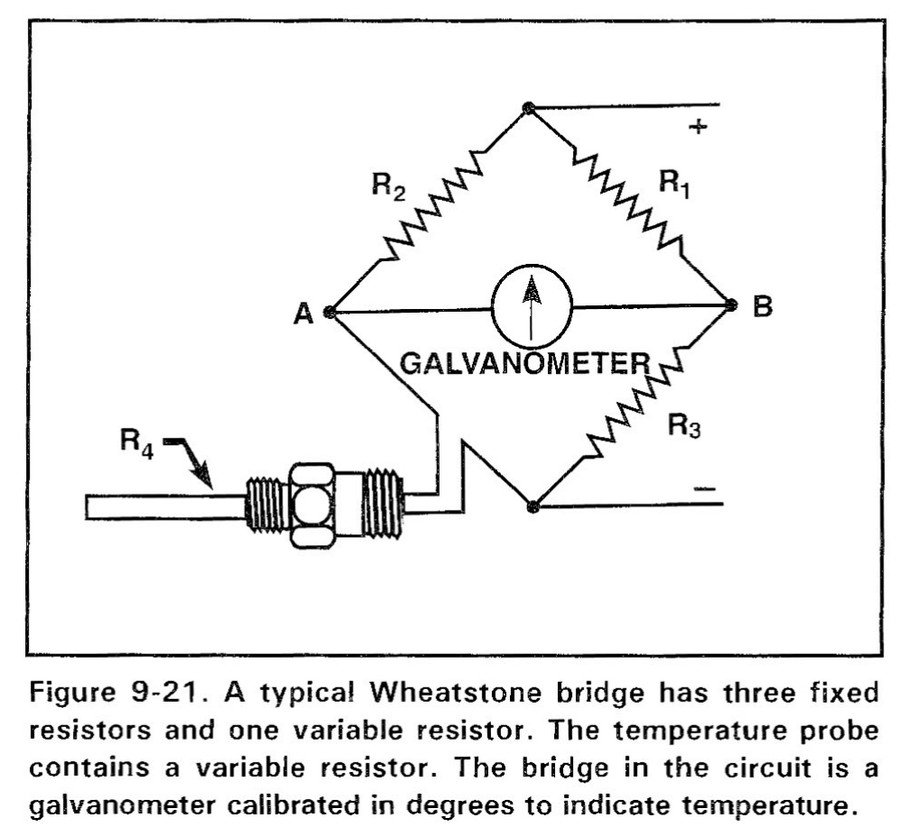
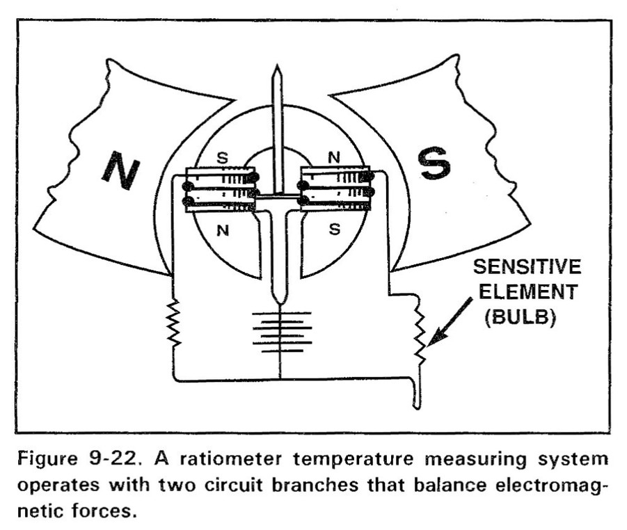
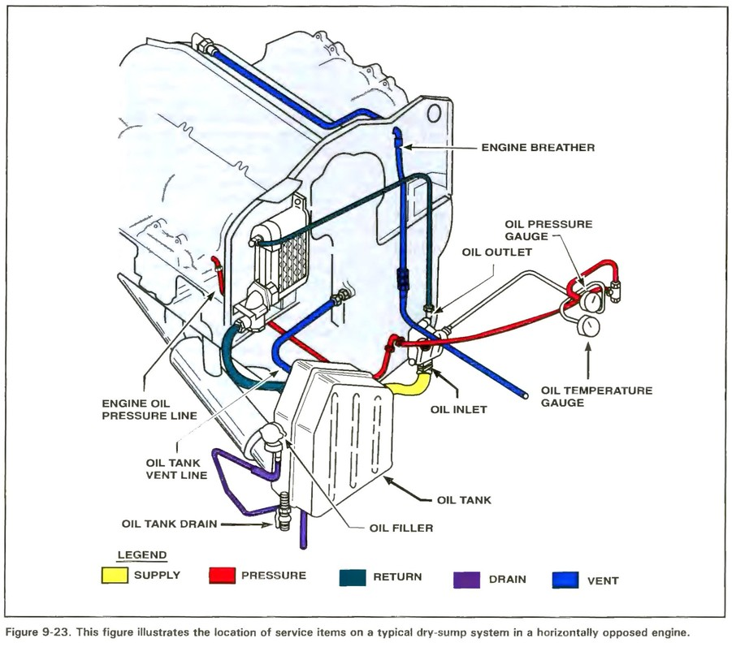
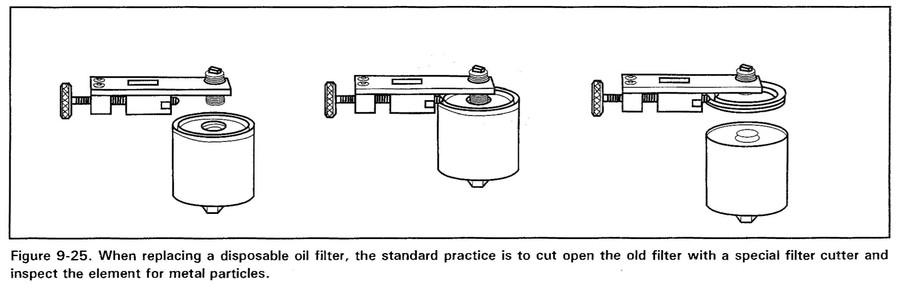
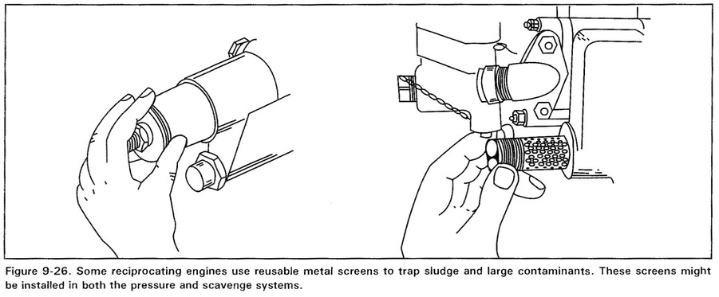
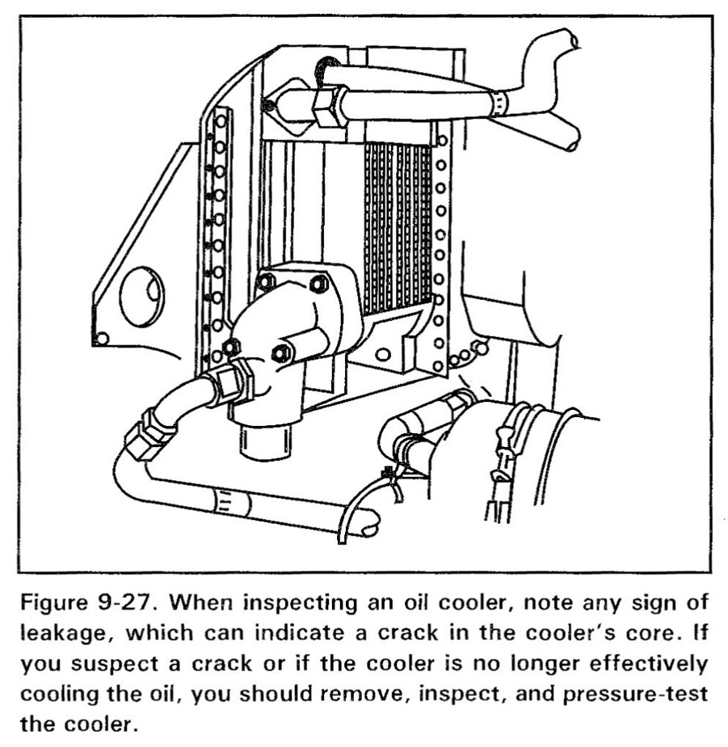
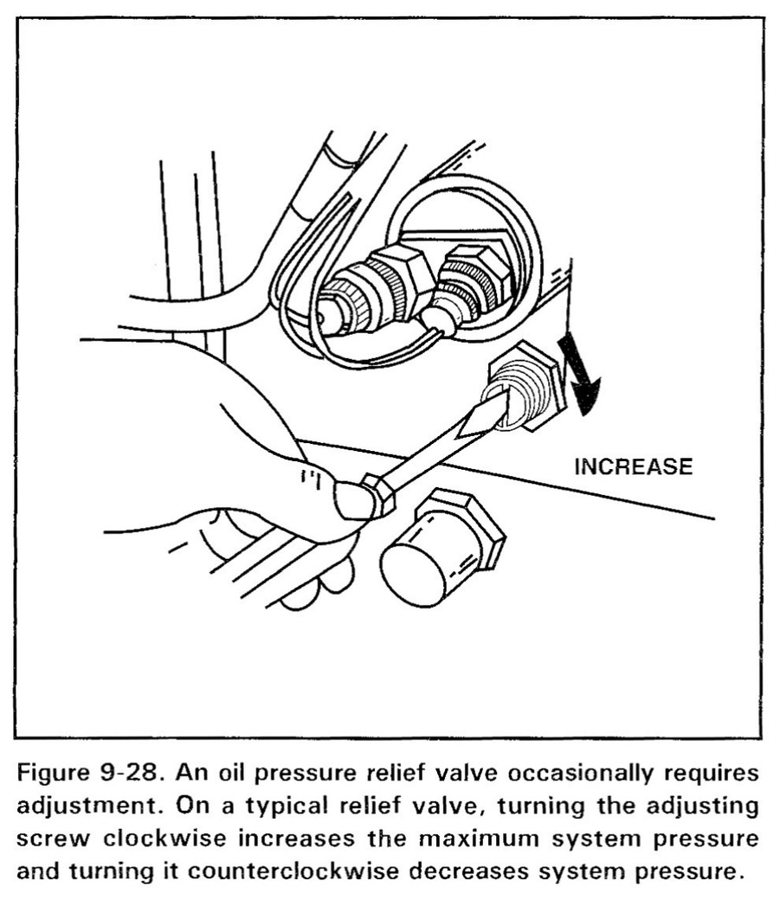
- A. 오일 압력이 정상보다 높아진다.The oil pressure will be higher than normal.
- B. 오일 온도와 오일 압력이 정상보다 높아진다.The oil temperature and oil pressure will be higher than normal.
- C. 오일 압력이 정상보다 낮아진다(lower than normal).The oil pressure will be lower than normal.
- A. 인화점.flash point.
- B. 비중.specific gravity.
- C. 점도(viscosity).viscosity.
- A. 등유(kerosene).kerosene.
- B. 알코올.alcohol.
- C. 가솔린(gasoline).gasoline.
- A. 오일계통 릴리프밸브를 재조정해야 함oil system relief valve should be readjusted.
- B. 윤활계통이 정상 작동 중engine's lubrication system is probably operating normally.
- C. 오일희석계통을 즉시 켜야 함oil dilution system should be turned on immediately.
- A. 누설 오일희석밸브leaking oil dilution valve.
- B. 절단된 오일펌프 샤프트sheared oil pump shaft.
- C. 막힌 오일쿨러 환형재킷clogged oil cooler annular jacket.
- A. 펌프 입구로 되돌아가는 오일이 늘면서 오일 흐름에 대한 저항이 증가하므로 늘어난다.increases as the resistance offered to the flow of oil increases with more oil being returned to the pump inlet by the relief valve.
- B. 릴리프 밸브가 펌프 입구로 되돌리는 오일이 줄면서 (주어진 RPM에서) 비교적 일정하게 유지된다(remains relatively constant).remains relatively constant (at a given RPM) with less oil being returned to the pump inlet by the relief valve.
- C. 릴리프 밸브가 펌프 입구로 되돌리는 오일이 늘면서 (주어진 RPM에서) 비교적 일정하게 유지된다.remains relatively constant (at a given RPM) with more oil being returned to the pump inlet by the relief valve.
- A. 낮은 오일 공급low oil supply.
- B. 손상/약한 압력릴리프밸브 스프링broken or weak pressure relief valve spring.
- C. 스캐빈지펌프 흡입부 공기록air lock in the scavenge pump intake.
- A. 스캐빈지 펌프를 나온 직후.Immediately after it leaves the scavenger pump.
- B. 압력 펌프에 들어가기 직전.Immediately before it enters the pressure pump.
- C. 압력 펌프를 나오는 바로 그 지점(Just as it leaves the pressure pump).Just as it leaves the pressure pump.
- A. 크랭크축 스로(crankshaft throws) 안.In the crankshaft throws.
- B. 스캐빈지 펌프 인접부.Adjacent to the scavenger pumps.
- C. 오일 저장 탱크 안.In the oil storage tank.
- A. 과보급(overservicing) 방지.prevent overservicing.
- B. 엔진 오일 계통에 이미 있을 오염물을 희석·중화하기 위해.help dilute and neutralize any contaminants that may already be present in the engine's oil system.
- C. 계통의 오일 누설을 더 잘 파악하기 위해.provide a better indication of any oil leaks in the system.
- A. 회전 시작부터 정상 유압이 형성될 때까지 베어링 윤활을 제공한다.provide lubrication of bearings from the beginning of starting rotation until normal oil pressure is established.
- B. 로터 계통의 진동 경향을 줄이고 약간의 정렬 오차를 허용하기 위해 외륜과 베어링 하우징 사이에 오일막을 제공한다.provide an oil film between the outer race and the bearing housing in order to reduce vibration tendencies in the rotor system, and to allow for slight misalignment.
- C. 베어링으로 가는 유압 서지를 완충한다.dampen surges in oil pressure to the bearings.
- A. 5psi 더하기 탱크 최대 작동 압력 이상(not less than 5 psi plus the maximum operating pressure).not less than 5 psi plus the maximum operating pressure of the tank.
- B. 5psi 더하기 탱크 평균 작동 압력 이상.not less than 5 psi plus the average operating pressure of the tank.
- C. 5psi.5 psi.
- A. 디텍터 팁 주위 자기력선을 교란해.disturbing the magnetic lines of flux around the detector tip.
- B. 디텍터 중심(양극) 전극과 접지 전극 사이 간극을 연결해(bridging the gap).bridging the gap between the detector center (positive) electrode and the ground electrode.
- C. 디텍터 팁의 이종 금속과 입자 접촉으로 작은 전류를 발생시켜.generating a small electric current that is caused by the particles being in contact with the dissimilar metal of the detector tip.
- A. 침전물 수집 지점.a collection point for sediments.
- B. 오일 펌프 입구로 가압 오일 공급.for a pressurized oil supply to the oil pump inlet.
- C. 스캐빈지된 오일에서 혼입 공기 분리(separation of entrained air from scavenged oil).separation of entrained air from scavenged oil.
- A. 열교환기가 없다.has no heat exchanger.
- B. 압력·브리더·스캐빈지 서브시스템으로 구성된다(consists of pressure, breather, and scavenge subsystems).consists of pressure, breather, and scavenge subsystems.
- C. 엔진 크랭크케이스에 오일을 저장한다.stores oil in the engine crankcase.
터빈 엔진 윤활 계통·칩 디텍터와 정비 심화 📙 Jeppesen 정독
Turbine Engine Lubrication, Chip Detectors, and Maintenance칩 디텍터(chip detector)는 윤활 계통 내 금속 입자를 포착하는 자기 장치입니다. 경고등을 포함한 칩 디텍터에서는 자석에 모인 페러스(철) 잔해가 양극과 접지 전극 사이 간극을 연결(브리지)해 지시 회로를 완성하면 경고등이 켜집니다. 일부 칩 디텍터는 사소한 잔해를 태워 없애는 전기 펄스 칩 디텍터로, 엔진 운영자가 디텍터 간극을 가로질러 전기 펄스를 발사해 중요치 않은 잔해(마모 퍼즈·슬리버)를 태워버릴 수 있고, 타이머를 넣어 거짓 경고를 줄입니다. 다만 큰 잔해는 번오프 사이클 후에도 남아 시간 지연 릴레이가 닫히면 경고등이 켜집니다.A chip detector is a magnetic device that captures metal particles in the lubrication system. In one with a warning light, ferrous debris on the magnet bridges the gap between positive and ground electrodes to complete the circuit and light the lamp. Some are electric pulse chip detectors: the operator fires an electrical pulse across the gap to burn off insignificant debris (wear fuzz or slivers), and a timer reduces false warnings—but large debris remains after the burn-off cycle and lights the lamp when the time-delay relay closes.
윤활 계통의 효과를 감시하기 위해 모든 항공기 엔진에는 교정된 오일 압력 게이지가 장착됩니다. 터빈 엔진 압력 게이지의 센서 위치는 보통 주 오일 필터 하류로, 이 위치가 엔진에 전달되는 압력의 정확한 지시를 보장합니다. 추가 기능으로 일부 오일 압력 계통은 저압 경고등을 포함하는데, 항공기 전원이 켜지고 엔진이 작동하지 않을 때 저압 경고등이 켜지고, 엔진 시동 후 오일 압력이 저압 한계를 넘으면 꺼져야 합니다. 오일 온도 게이지는 오일이 가동부를 윤활하며 내는 냉각 효과를 지시합니다. 터빈 엔진 윤활 계통의 오일 온도 센서 위치는 압력 서브계통 또는 스캐빈지 서브계통 중 하나일 수 있습니다. 윤활 계통의 높은 유량(보통 분당 저장조 용량의 2~5배) 때문에 계통 전체의 오일 온도는 매우 일정합니다.To monitor the lubrication system, all engines have a calibrated oil pressure gauge; a turbine gauge's sensor is typically downstream of the main oil filter for an accurate reading of pressure delivered to the engine. Some systems add a low-pressure warning light: with aircraft power on and the engine off it illuminates, and after start it should extinguish when pressure passes the low limit. The oil temperature gauge indicates the oil's cooling effectiveness; in a turbine the sensor may be in the pressure or scavenge subsystem, and because of the high flow rate (typically two to five times reservoir capacity per minute), oil temperature throughout the system is very consistent.
터빈 엔진 윤활 계통 정비는 보통 여러 구성품의 조정·장탈·세척·교체를 포함합니다. 예를 들어 오일 필터는 주기적으로 세척·교체되고 압력 릴리프 밸브는 가끔 조정이 필요합니다. 모든 정비 전에 반드시 해당 제조사 정비 매뉴얼과 서비스 회보를 참고해야 합니다.Turbine lubrication maintenance usually includes adjusting, removing, cleaning, and replacing components—filters are periodically cleaned or replaced and relief valves occasionally adjusted. Always consult the manufacturer's maintenance manuals and service bulletins before any maintenance.
일상 사용 중 오일은 가동부 보호 능력을 떨어뜨리는 물질에 지속적으로 노출됩니다. 터빈 엔진의 주요 오염물은 가솔린, 수분, 산, 먼지, 카본, 금속 입자입니다. 이들이 시간이 지나며 축적되면 내부 엔진 부품에 과도한 마모를 유발합니다. 권장 오일 교환 간격은 보통 제조사 권고에 근거합니다. 터빈 엔진의 오일은 연소 가스로부터 밀봉되어 있어 왕복엔진보다 오일 교환 간격이 깁니다. 예를 들어 많은 비즈니스 제트기의 전형적 오일 교환 간격은 300~400시간 또는 6개월 중 먼저 도래하는 쪽입니다. 시간당 0.2쿼트 이상 소비하는 대형 터빈 엔진에서는 일부 운영자가 오일 보충을 효과적인 오일 교환 방법으로 삼는데, 정상 보충이 50~100시간마다 모든 오일을 자동으로 교체한다는 논리입니다.In routine use, oil is constantly exposed to substances reducing its protective ability; turbine contaminants include gasoline, moisture, acids, dirt, carbon, and metal particles that cause excessive wear if they accumulate. The recommended change interval follows the manufacturer; because turbine oil is sealed from combustion gases, intervals are longer than for reciprocating engines—a typical business-jet interval is 300 to 400 hours or 6 months, whichever comes first. On larger turbines consuming more than 0.2 quarts per hour, some operators rely on replenishment as an effective change method, reasoning that normal replenishment automatically changes all the oil every 50 to 100 hours.
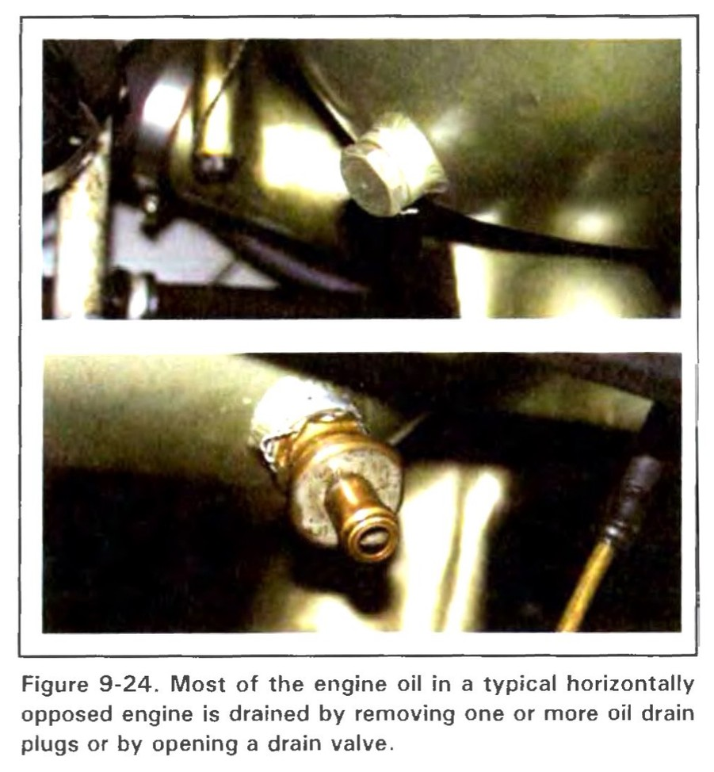
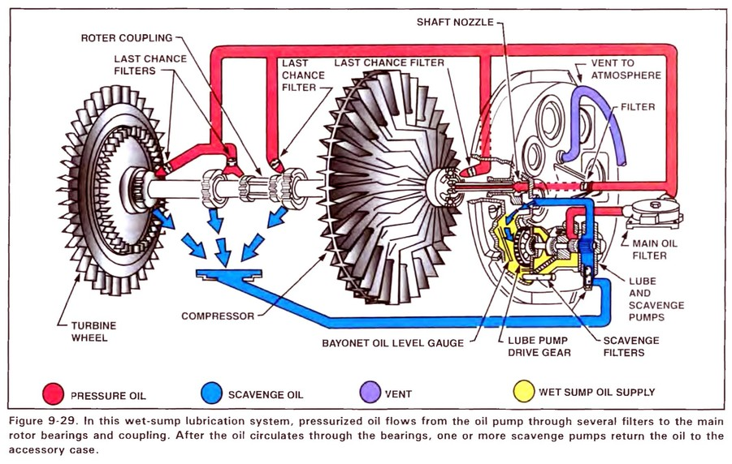
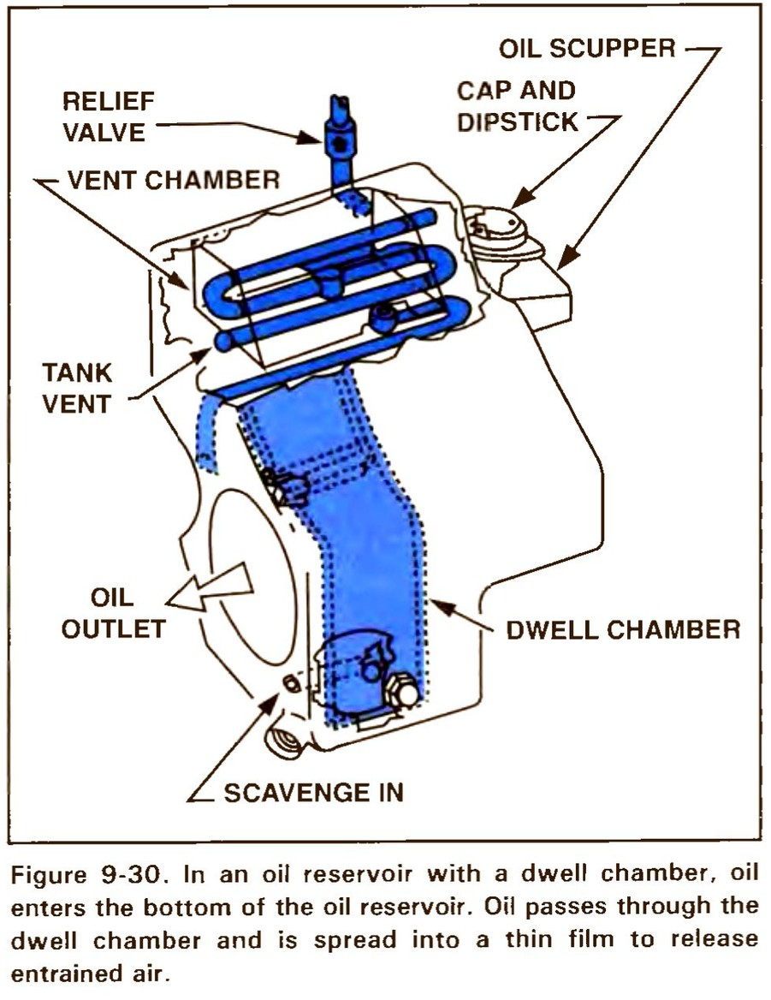
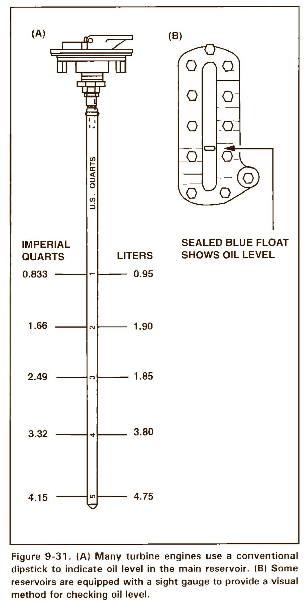
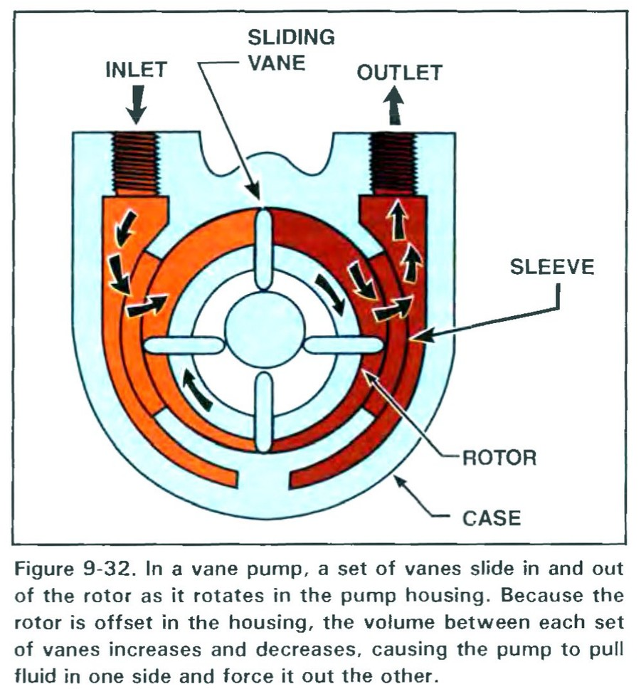
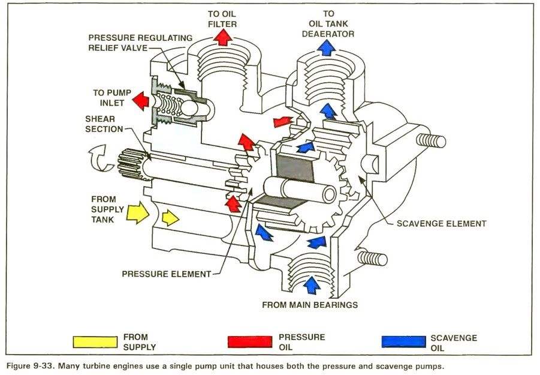
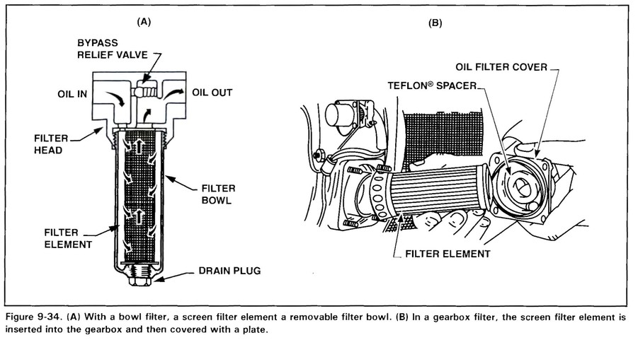
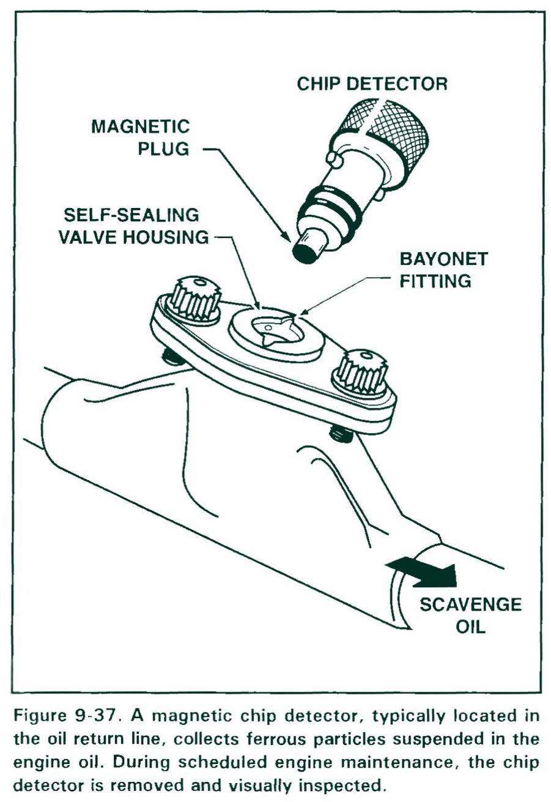
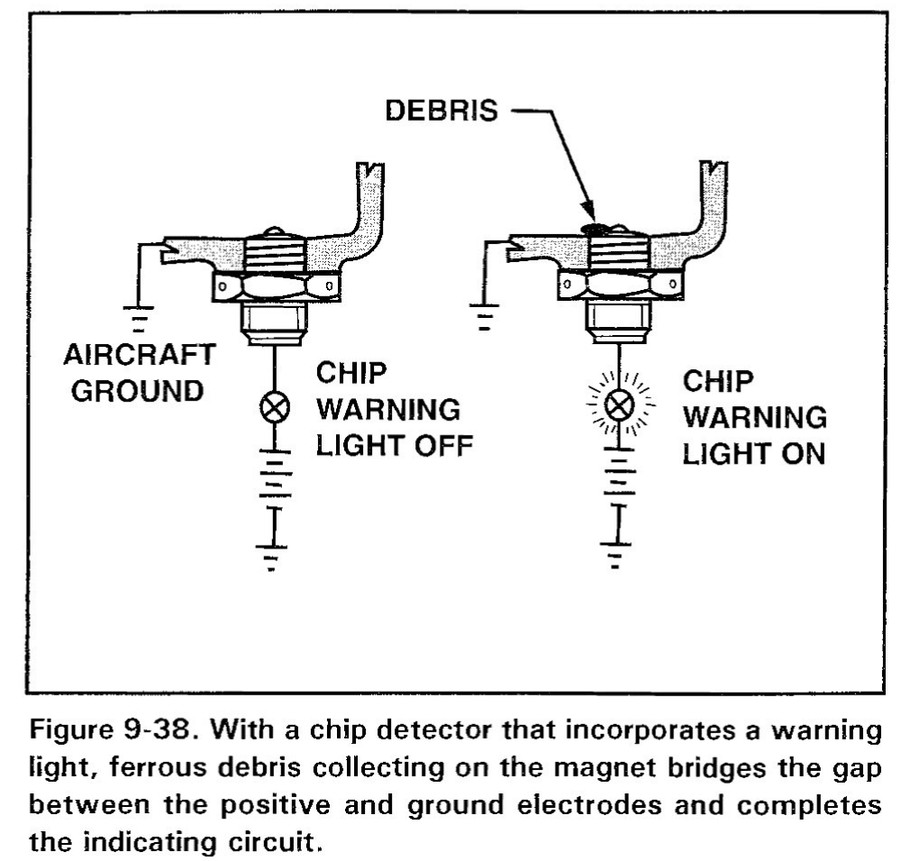
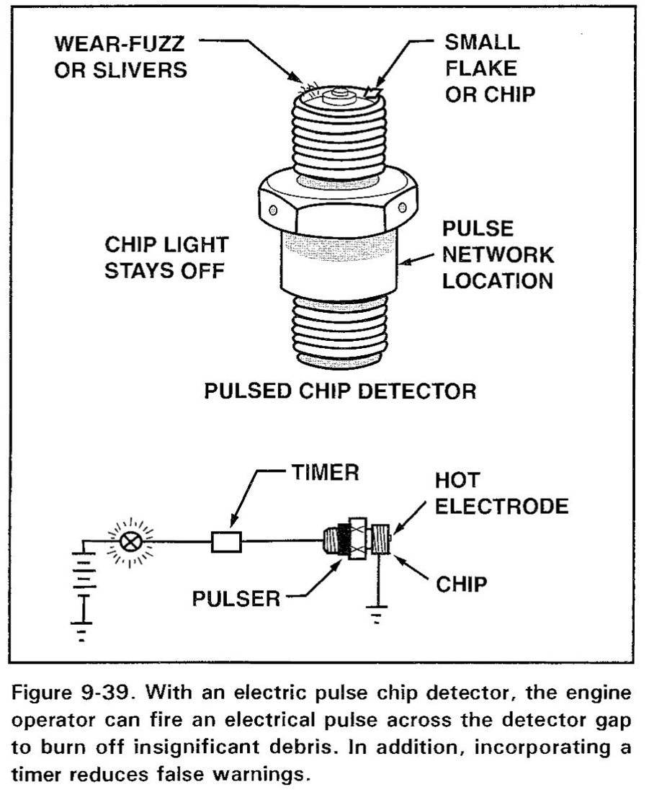
- A. 오일이 차가울 때 높은 엔진 오일 압력을 제공하고 오일이 따뜻해지면 자동으로 오일 압력을 낮춘다.provide a high engine oil pressure when the oil is cold and automatically lower the oil pressure when the oil warms up.
- B. 고도 변화에 따른 대기압 변화를 보상한다.compensate for changes in atmospheric pressure that accompany altitude changes.
- C. 오일이 따뜻하든 차갑든 오일 압력을 거의 같게 자동 유지한다.automatically keep oil pressure nearly the same whether the oil is warm or cold.
- A. 오일압력 게이지가 정상 지시The engine oil pressure gauge will indicate normal oil pressure.
- B. 엔진 리턴라인/지시포트에서 오일 유출Oil will flow from the engine return line or indicator port.
- C. 제조사 지정량 펌핑 완료When the quantity of oil specified by the manufacturer has been pumped into the engine.
터빈 엔진 오일 교환·플러싱·필터 교체와 오일 보급 심화 📙 Jeppesen 정독
Turbine Oil Change, Flushing, Filter Replacement, and Servicing엔진 오일을 교환할 때는 엔진 정지 후 가능한 한 빨리 배출합니다. 이 시점에 최대량의 오일이 저장조에 있고 오염물이 부유 상태여서, 결과적으로 대부분의 오염물이 오일과 함께 엔진에서 제거됩니다. 터빈 엔진의 오일은 보통 오일 저장조, 부속 기어박스 섬프, 주 오일 필터, 그리고 계통의 다른 낮은 지점에서 배출됩니다. 일부 제조사는 윤활 계통을 주기적으로 플러싱(flushing)하도록 권장하는데, 플러싱 절차는 보통 엔진에 적절한 오일이나 세척제를 채우고 스타터로 엔진을 모터링한 뒤 오일이나 세척제를 배출하는 것으로 구성됩니다.When changing oil, drain the engine as soon as possible after shutdown: the maximum oil is in the reservoir and contaminants are suspended, so most drain out with the oil. Turbine oil is typically drained from the reservoir, accessory-gearbox sump, main oil filter, and other low points. Some makers recommend periodic flushing—usually filling the engine with proper oil or cleaning agent, motoring the engine with the starter, then draining it.
오일을 배출할 때는 오염 징후를 면밀히 검사합니다. 예를 들어 엔진 오일이 짙은 갈색이나 거무스름하지만 오염물이 거의 또는 전혀 없다면 엔진이 과열됐을 수 있습니다. 이 변색은 오일 분해를 나타내는 화학 반응의 결과입니다. 과열 원인은 낮은 오일 양이거나 막힌 오일 제트, 붕괴하는 베어링 같은 엔진 고장일 수 있습니다. 과도한 오일 소비 증거를 엔진 로그에서 확인하고 정비 매뉴얼의 적절한 트러블슈팅 가이드에 따라 다른 단서를 철저히 분석합니다. 분광 오일 분석 프로그램(SOAP)은 터빈 엔진에 매우 유용합니다. 왕복엔진처럼 정확한 추세 예측을 개발하려면 일련의 시료를 분석해야 합니다. 정기 오일 교환을 받지 않는 엔진에서도 정기 오일 분석이 권장되는데, 이 경우 시료를 오일 저장조에서 채취하며, 마모 물질과 오염물이 시료에 부유 상태로 남도록 엔진 정지 후 15분 이내에 저장조 중앙에서 채취해야 합니다.When draining, inspect closely for contamination: dark brown or blackish oil with little or no contaminants may mean overheating—the discoloration is a chemical reaction indicating oil decomposition, from low oil quantity or a fault like a clogged oil jet or disintegrating bearing. Check engine logs for excessive consumption and analyze other clues per the manual. SOAP is extremely valuable for turbines; as with reciprocating engines, analyze a series of samples for an accurate trend. Even on engines without regular changes, regular analysis is recommended, drawing samples from the center of the reservoir within 15 minutes of shutdown so wear materials and contaminants stay suspended.
오일 필터는 매 정기 검사 때 제거해야 합니다. 필터 요소 종류에 따라 세척할지 교체할지 결정됩니다. 재사용 가능하면 분해·검사·세척 후 재설치하고, 일회용은 금속 입자를 검사하고 교체합니다. 필터 보울이나 필터 스크린에서 보일 만큼 큰 오염물은 우려 사항이므로 항상 제조사 지침에 따라 출처를 규명합니다. SOAP를 따랐다면 최신 시료의 각종 금속 판독값을 이전 시험 결과와 비교할 수 있고, 이 결과는 엔진을 더 면밀히 검사하기 위해 분해할지 결정하는 중요한 정보를 제공합니다. 용제로 재사용 필터를 손세척하는 전통적 방법이 여전히 흔하며, 초음파 세척기나 진동 세척기도 쓸 수 있는데 필터를 용제 욕조에 넣으면 고주파 에너지가 이물질을 떨어뜨려 필터 요소에서 오염물을 제거합니다.Remove the oil filter at every regular inspection; the element type dictates cleaning or replacement—reusable ones are disassembled, inspected, cleaned, and reinstalled, disposable ones inspected for metal and replaced. Contaminants large enough to see in filter bowls or on screens are a concern, so follow the maker's instructions to find the source. If SOAP has been followed, compare the latest sample's metals to earlier results, giving key information for whether to disassemble the engine. Hand-cleaning reusable filters in solvent is still common, and ultrasonic or vibrator cleaners work too—placed in a solvent bath, high-frequency energy dislodges foreign material.
스크린·필터를 검사하고 오일을 완전히 배출한 뒤 드레인 플러그를 교체·고정합니다. 일회용 필터 사용기는 새것을 설치·고정하고, 오일 스크린 사용기는 스크린을 세척·재설치하고 원래 유닛을 고정합니다. 모든 필터·스크린을 고정한 후 권장 등급의 오일로 저장조를 다시 채웁니다. 표준 오일 식별 체계는 없으며, 실제로 일부 오일 제품은 라벨에 형식 번호나 MIL 사양을 포함하지 않고 이런 사양을 오일 회사 문헌에서만 찾을 수 있는 경우도 있습니다. 터빈 엔진용 합성유는 윤활 계통에 오염물이 들어갈 기회를 최소화하기 위해 보통 1쿼트 용기로 공급됩니다. 그러나 많은 오일 저장조가 압력 원격 주입 기능을 갖추고 있어, 이 기능을 쓰려면 오일 펌핑 카트를 저장조에 부착해 오일을 펌핑하며 과충전을 막기 위해 보통 오일 필러 캡을 제거합니다. 많은 정비 시설은 여전히 오일을 저장조에 직접 붓습니다.After inspecting screens/filters and fully draining, replace and secure the drain plug; install a new disposable filter or clean and reinstall a screen, then refill with the recommended grade. There is no standard oil identification system—some products omit a type number or MIL spec from labels, findable only in the oil company's literature. Turbine synthetic oil is usually supplied in one-quart containers to minimize contamination entering the system, but many reservoirs have pressure remote-filling: an oil pumping cart attaches to pump oil in, usually with the filler cap removed to prevent overfilling. Many facilities still pour oil directly into the reservoir.
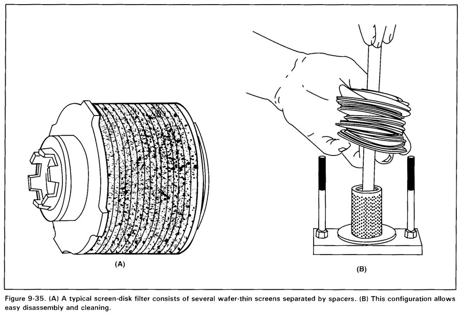
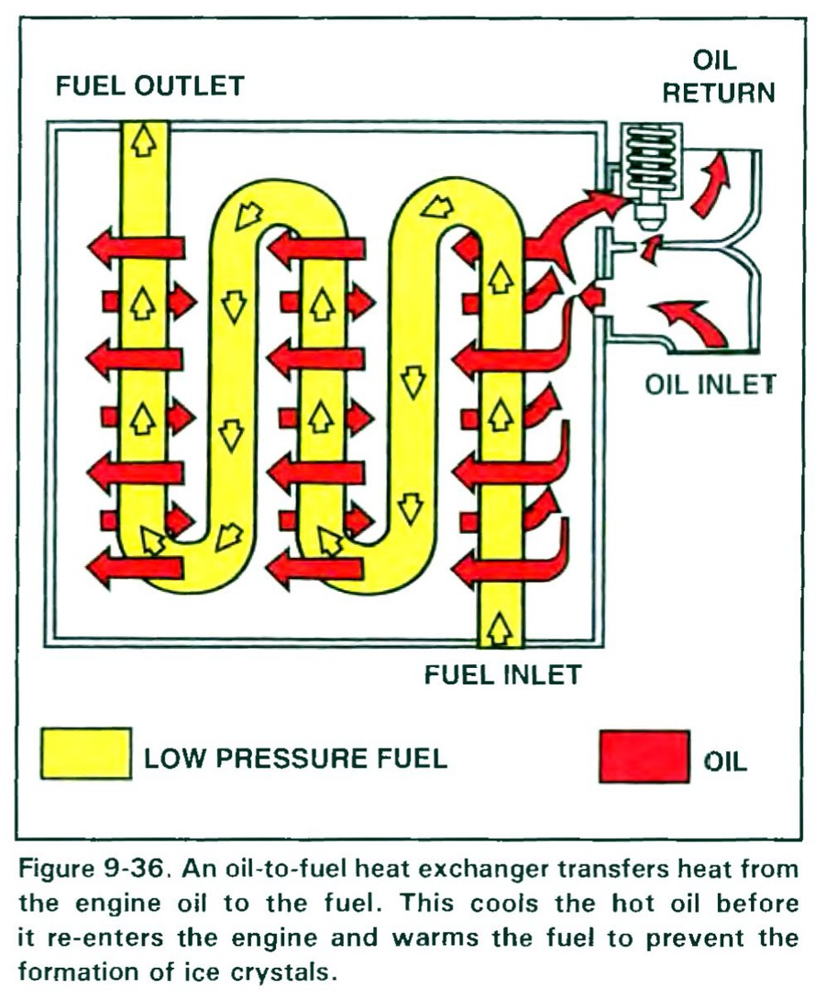
- A. 항공 정보 매뉴얼(AIM).Aircraft Information Manual (AIM).
- B. 항공기 정비 매뉴얼(aircraft maintenance manual, MM).aircraft maintenance manual (MM).
- C. 형식증명 자료집(TCDS).Type Certificate Data Sheet (TCDS).
공랭 계통과 온도 지시 📙 Jeppesen 참고
Air Cooling & Temperature Indication대부분 항공 왕복엔진은 공랭식입니다. 실린더 배럴·헤드의 냉각핀(cooling fins)이 표면적을 넓혀 열을 공기로 전달하며, 가장 뜨거운 배기밸브 부위에 핀이 가장 많습니다. 성형엔진은 항력을 줄이려 타운엔드 링·NACA 카울링을, 대향엔진은 전체를 감싼 카울링을 씁니다. 램 공기의 15~30%만 실제 냉각에 쓰이므로 배플·인터실린더 배플로 공기를 실린더 구석까지 몰아줍니다.Most aircraft reciprocating engines are air-cooled. Cooling fins on the cylinder barrels and heads increase surface area to transfer heat to the air, with the most fin area at the hottest exhaust-valve region. Radial engines use Townend rings or NACA cowlings to cut drag, opposed engines a full cowling. Only 15–30% of ram air actually cools, so baffles and inter-cylinder baffles force air over all parts of a cylinder.
카울플랩(cowl flap)은 카울 하부 후단의 경첩문으로, 열면 하부 저압이 강해져 냉각공기를 더 끌고 닫으면 약해집니다 — 지상운전엔 완전개방, 순항엔 닫아 항력·과냉을 막습니다. augmenter 튜브·블라스트 튜브로 추가 냉각을 합니다. 온도 지시는 실린더헤드온도(CHT) 계기로, 열전대(thermocouple, 이종금속 두 접점의 온도차로 전류 발생)를 씁니다. 극성·색코드를 지키고(반대로 연결하면 0 아래로 벗어남) 리드 길이는 저항이 맞춰져 있어 임의로 바꾸지 않습니다.Cowl flaps are hinged doors at the lower rear of the cowl — opening strengthens the lower low-pressure area to pull more cooling air, closing weakens it; full-open for ground ops, closed in cruise to limit drag and overcooling. Augmenter tubes and blast tubes add cooling. Temperature is shown by the cylinder-head-temperature (CHT) gauge using a thermocouple (dissimilar metals whose junction temperature difference generates current). Observe polarity and color code (reversing sends the meter below zero), and don't change lead length since its resistance is matched.
실린더 냉각핀·배플·카울 플랩의 검사와 수리 심화 📙 Jeppesen 정독
Cylinder Cooling Fins, Baffles, and Cowl Flap Inspection/Repair카울 패널 래치에서 리벳 누락·핸들 헐거움·손상을 검사합니다. 안전 잠금장치의 손상된 리벳과 안전 스프링 상태를 점검하고, 모든 지지 브래킷의 장착 견고성을 신중히 검사하며 발견된 균열은 제조사 지침에 따라 수리합니다. 파손·균열의 조기 발견은 손상을 제한하고 카울링 수명을 연장할 기회를 줍니다. 냉각핀의 상태는 그 효과에 큰 영향을 미치므로 매 정기 검사 때 냉각핀을 점검해야 합니다. 엔진의 냉각핀은 특정량의 열을 방산하도록 특정 표면적으로 설계됩니다. 냉각핀이 실린더에서 부러지면 냉각용 핀 면적이 줄어듭니다. 엔진의 핀 면적은 공기에 노출된 총 면적(핀 양면)입니다. 과도한 핀 면적이 없어지면 실린더에 핫 스폿이 형성될 수 있습니다.Inspect cowl-panel latches for missing rivets and loose or damaged handles; check safety locks for damaged rivets and the safety spring, examine support brackets for mounting security, and repair cracks per the maker—early detection limits damage and extends cowling life. A cooling fin's condition significantly affects effectiveness, so check fins at each inspection: fins are designed with a specific surface area to dissipate a certain amount of heat, and when fins break off, less area is available. Fin area is the total area (both sides) exposed to air, and losing excessive fin area can form hot spots on the cylinder.
제조사는 총 핀 면적의 백분율을 기준으로 특정 실린더에 허용되는 핀 손상량을 정합니다. 따라서 실린더 냉각핀을 수리할 때는 반드시 엔진 제조사의 서비스·오버홀 매뉴얼을 참고해 수리가 한계 내인지 확인합니다. 일반적으로 실린더 헤드까지 확장되지 않은 냉각핀의 균열은 수리할 수 있습니다. 전형적 수리는 다이 그라인더와 로터리 파일로 핀의 손상 부위를 제거한 뒤 가장자리를 매끄러운 윤곽으로 다듬는 것으로, 제거하는 총 핀 면적 백분율은 제조사 한계를 넘지 않아야 합니다. 핀 가장자리의 균열은 길어지는 것을 막기 위해 줄질하거나 스톱 드릴할 수 있습니다. 부러진 핀으로 생긴 거칠거나 날카로운 가장자리도 손상이 수리 한계를 넘지 않으면 매끄러운 윤곽으로 줄질할 수 있습니다. 알루미늄 실린더 헤드에서 냉각핀이 실수로 구부러지고 균열이 생기지 않았다면 핀을 그대로 두어야 하는데, 알루미늄 냉각핀은 취성이 있어 펴려는 시도가 균열이나 파손을 유발할 수 있기 때문입니다.The maker sets permissible fin damage as a percentage of total fin area, so always consult the service or overhaul manual to keep repairs within limits. Generally, a fin crack not extending into the cylinder head is repairable: a typical repair removes the damaged fin portion with a die grinder and rotary file, then files the edges smooth, with the percentage removed not exceeding limits. A crack at a fin edge can be filed or stop-drilled to prevent lengthening, and rough or sharp edges from broken fins can be filed smooth if within limits. If an aluminum-head fin is inadvertently bent with no crack, leave it alone—aluminum fins are brittle and straightening could crack or break them.
검사에서 실린더 배플·디플렉터의 결함이 드러나면 냉각 효율 손실을 막기 위해 수리해야 합니다. 배플은 지속적 진동을 받으므로 다른 부품보다 금속의 가공경화가 상당히 빨리 일어납니다. 가공경화는 엔진 배플을 극도로 취성 있게 만들어 피로 균열 가능성을 높입니다. 검사 거울과 조명을 써서 배플·디플렉터·슈라우드의 균열·구부러진 부분·움푹 들어간 곳·헐거운 부착 하드웨어를 검사합니다. 막 형성되기 시작한 작은 균열은 스톱 드릴하고 구부러진 배플은 폅니다. 카울링을 설치할 때 배플 공기 씰이 손상되지 않도록 주의합니다. 이 씰은 보통 플라스틱·고무·가죽 스트립으로 만들어지며 제조사 서비스 매뉴얼 지시대로 배향해야 합니다. 손상된 공기 씰과 부적절하게 설치되거나 헐거운 배플은 실린더 핫 스폿을 유발할 수 있습니다. 검사 중 실린더에서 발견된 탄 페인트는 핫 스폿의 증거일 수 있습니다.If inspection reveals defects in cylinder baffles and deflectors, repair them to prevent lost cooling efficiency. Because baffles undergo constant vibration, work-hardening occurs much faster than on other parts, making them extremely brittle and prone to fatigue cracking. Using an inspection mirror and light, examine baffles, deflectors, and shrouds for cracks, bent sections, dents, and loose hardware; stop-drill small forming cracks and straighten bent baffles. When installing cowling, avoid damaging the baffle air seals—typically plastic, rubber, or leather strips oriented per the service manual, since damaged seals and improperly installed or loose baffles can create hot spots. Burned paint on a cylinder during inspection can be evidence of a hot spot.
카울 플랩(cowl flap)은 장착 견고성과 균열 징후를 육안 검사합니다. 또한 카울 플랩을 작동시켜 힌지와 작동 기구의 상태를 확인합니다. 정비를 위해 카울 플랩을 제거했다면 재설치 후 조정을 점검합니다. 적절한 조정은 개방·폐쇄 위치의 올바른 리깅을 보장하는 데 도움이 됩니다. 두 위치의 올바른 리깅 확립은 올바른 실린더 헤드 온도 유지에 중요합니다. 예를 들어 너무 많이 열린 카울 플랩은 카울링을 통해 너무 많은 냉각 공기를 통과시켜 엔진 온도가 불충분해지고, 충분히 열리지 않는 카울 플랩은 실린더 헤드 온도가 규정 한계를 초과하게 할 수 있습니다.Visually inspect cowl flaps for mounting security and cracking, and operate them to verify the hinges and mechanism. If removed for maintenance, check their adjustment after reinstallation—proper adjustment ensures correct rigging for open and closed positions, important for correct cylinder head temperatures. Cowl flaps opened too far let too much cooling air through, giving insufficient engine temperature, while flaps that don't open far enough can let cylinder head temperatures exceed limits.
- A. 기계적 효율(Mechanical efficiency).Mechanical efficiency.
- B. 엔진 RPM.Engine RPM.
- C. 윤활유 특성.Lubricant characteristics.
- A. 헤드 폐기 사유.is cause for rejection of the head.
- B. 손상 및/또는 수리 한계를 초과하지 않으면 매끄러운 윤곽으로 가공 가능(may be filed to smooth contours if damage and/or repair limits are not exceeded).may be filed to smooth contours if damage and/or repair limits are not exceeded.
- C. 그대로 두어야 함.should be left alone.
터빈 엔진 냉각 📙 Jeppesen 참고
Turbine Engine Cooling터빈엔진은 연속연소로 열이 커서 흡입공기의 대부분을 냉각에 씁니다 — 약 25%만 연소(1차공기), 나머지 75%가 냉각(2차공기)입니다. 2차공기는 연소실 라이너 안팎에 냉각막을 만들어 화염이 벽에 닿지 않게 하고 연소가스를 터빈이 견딜 온도로 낮춥니다. 외부 케이스 온도는 압축기 입구의 대기온도 수준에서 터빈부 약 1,000°F까지 분포합니다.Turbine engines run hot from continuous combustion, so most inlet air is used for cooling — only ~25% for combustion (primary air), the other 75% for cooling (secondary air). Secondary air forms a cooling blanket on both sides of the combustor liner to keep flame off the walls and lowers gas temperature to what the turbine can withstand. Outer-case temperature ranges from near-ambient at the compressor inlet to ~1,000°F at the turbine.
가장 뜨거운 터빈부는 블리드에어(bleed air)로 냉각합니다 — 고압 블리드에어가 터빈 디스크 양면을 지나 열을 빼고, 중공(hollow) 노즐베인·블레이드 안으로 통과해 팁·앞전·뒷전 구멍으로 나가며 대류·필름냉각을 합니다. 일부 정지 노즐베인은 다공질 재료로 만들어 공기가 배어나오는 transpiration 냉각을 씁니다. 이 냉각으로 블레이드는 합금 한계보다 600~800°F 높은 환경에서 작동합니다. 고바이패스 터보팬은 능동 팁클리어런스 제어(ACC)로 케이스 팽창을 조절해 효율을 높입니다.The hottest turbine section is cooled by bleed air — high-pressure bleed air passes across both faces of turbine disks to remove heat, and flows through hollow nozzle vanes/blades exiting tip, leading-edge, and trailing-edge holes for convection and film cooling. Some stationary nozzle vanes are porous for transpiration cooling as air seeps through. This lets blades operate 600–800°F above their alloy limits. High-bypass turbofans use active tip clearance control (ACC) to regulate case expansion for efficiency.
- A. 1만 옳다.only 1 is true.
- B. 2만 옳다.only 2 is true.
- C. 1, 2 모두 옳다(both 1 and 2 are true).both 1 and 2 are true.
- A. 연료.fuel.
- B. 입구 가이드 베인.inlet guide vanes.
- C. 터빈, 베인, 블레이드, 베어링(turbine, vanes, blades, and bearings).turbine, vanes, blades, and bearings.
🗣 ASA 구술시험 (Oral Exam) Typical Oral Questions
📝 ACS 객관식 퀴즈 ACS Multiple-Choice Quiz
FAA 핸드북 전체 도면
FAA Handbook FiguresNo FAA Handbook figures for this chapter, or not yet uploaded.